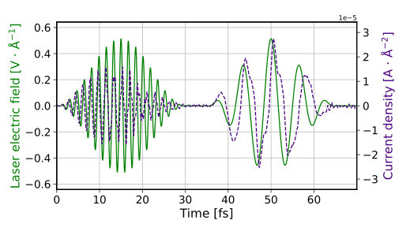
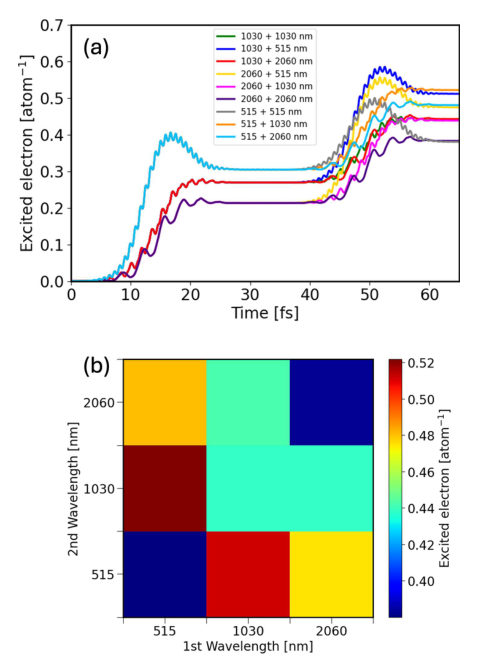
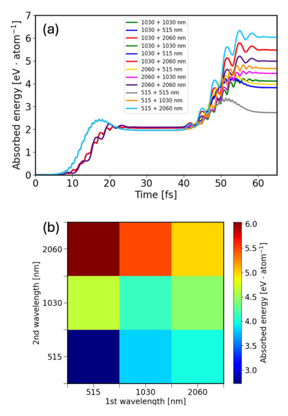

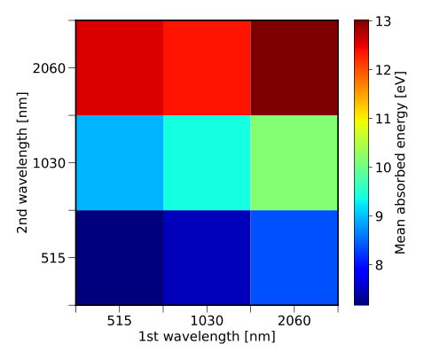
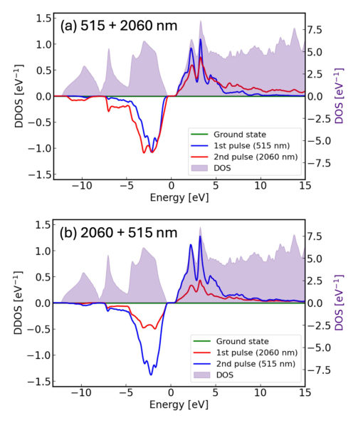

176 papers · 99 relevant · 6 highlighted
Every paper with at least one nonzero topic score, sorted by best-matching score. 🔥 marks scores ≥4/5. Click the title to jump to the full entry below; click [arXiv] to open the paper page. (secondary) marks papers from de-prioritized cond-mat archives.
Rydberg arrays 5/5 · 🔥 QC/QI experiment 4/5 · 🔥 analog quantum simulation 4/5 · 🔥 entanglement & information structure 4/5 · 🔥 non-equilibrium dynamics 4/5 · quantum measurements 3/5 · exotic spin models in light-matter 2/5 · measurement-induced transitions 2/5 · non-equilibrium universality 2/5 · scars & prethermalization 2/5scars & prethermalization 5/5 · 🔥 Rydberg arrays 4/5 · 🔥 non-equilibrium dynamics 4/5 · analog quantum simulation 3/5 · driven-dissipative phase transition 3/5 · entanglement & information structure 3/5 · exotic spin models in light-matter 3/5analog quantum simulation 4/5 · 🔥 driven-dissipative phase transition 4/5 · Tavis-Cummings & cavity-many-emitter 3/5 · correlated cavity matter 3/5 · exotic spin models in light-matter 3/5 · non-equilibrium dynamics 3/5 · non-equilibrium universality 3/5 · quantum optics experiment 3/5 · Keldysh / 2PI / non-Gaussian methods 2/5 · methods for driven-dissipative 2/5 · entanglement & information structure 1/5driven-dissipative phase transition 4/5 · 🔥 entanglement & information structure 4/5 · 🔥 measurement-induced transitions 4/5 · 🔥 non-equilibrium universality 4/5 · non-equilibrium dynamics 3/5 · methods for driven-dissipative 2/5 · quantum measurements 2/5(secondary) — 🔥 driven-dissipative phase transition 4/5 · 🔥 non-equilibrium dynamics 4/5 · 🔥 quantum optics experiment 4/5 · Keldysh / 2PI / non-Gaussian methods 3/5 · methods for driven-dissipative 3/5 · non-equilibrium universality 3/5quantum measurements 4/5 · correlated / nonlocal dissipation 3/5 · driven-dissipative phase transition 3/5 · entanglement & information structure 3/5 · methods for driven-dissipative 3/5 · measurement-induced transitions 2/5 · non-equilibrium dynamics 2/5driven-dissipative phase transition 4/5 · entanglement & information structure 3/5 · methods for driven-dissipative 3/5 · non-equilibrium dynamics 3/5 · Keldysh / 2PI / non-Gaussian methods 2/5 · correlated / nonlocal dissipation 2/5 · non-equilibrium universality 2/5QC/QI experiment 4/5 · 🔥 quantum optics experiment 4/5 · quantum measurements 3/5 · entanglement & information structure 2/5 · interference shaping light 2/5(secondary) — 🔥 QC/QI experiment 4/5 · 🔥 quantum optics experiment 4/5 · quantum measurements 3/5 · spintronics-quantum-optics interface 3/5driven-dissipative phase transition 4/5 · 🔥 non-equilibrium dynamics 4/5 · non-equilibrium universality 3/5 · quantum measurements 2/5non-equilibrium dynamics 4/5 · driven-dissipative phase transition 3/5 · entanglement & information structure 2/5 · non-equilibrium universality 2/5 · quantum measurements 2/5Rydberg arrays 4/5 · analog quantum simulation 3/5 · entanglement & information structure 3/5 · exotic spin models in light-matter 3/5QC/QI experiment 4/5 · 🔥 quantum optics experiment 4/5 · quantum measurements 3/5 · interference shaping light 2/5non-equilibrium dynamics 4/5 · driven-dissipative phase transition 3/5 · methods for driven-dissipative 3/5 · entanglement & information structure 2/5QC/QI experiment 4/5 · 🔥 quantum optics experiment 4/5 · quantum measurements 2/5 · spintronics-quantum-optics interface 2/5QC/QI experiment 4/5 · 🔥 spintronics-quantum-optics interface 4/5 · non-equilibrium dynamics 2/5 · quantum measurements 2/5QC/QI experiment 4/5 · 🔥 quantum optics experiment 4/5 · entanglement & information structure 2/5 · quantum measurements 2/5methods for driven-dissipative 4/5 · non-equilibrium dynamics 3/5 · driven-dissipative phase transition 2/5 · entanglement & information structure 2/5(secondary) — 🔥 spintronics-quantum-optics interface 4/5 · QC/QI experiment 3/5 · correlated / nonlocal dissipation 2/5 · quantum measurements 2/5QC/QI experiment 4/5 · non-equilibrium dynamics 2/5 · quantum measurements 2/5 · quantum optics experiment 2/5QC/QI experiment 4/5 · 🔥 quantum optics experiment 4/5 · interference shaping light 2/5QC/QI experiment 4/5 · spintronics-quantum-optics interface 3/5 · quantum optics experiment 2/5spintronics-quantum-optics interface 4/5 · interference shaping light 3/5 · methods for driven-dissipative 2/5spintronics-quantum-optics interface 4/5 · QC/QI experiment 3/5 · quantum measurements 2/5quantum measurements 4/5 · entanglement & information structure 2/5 · methods for driven-dissipative 2/5QC/QI experiment 4/5 · entanglement & information structure 2/5 · non-equilibrium dynamics 2/5entanglement & information structure 4/5 · 🔥 non-equilibrium dynamics 4/5QC/QI experiment 4/5 · 🔥 quantum optics experiment 4/5non-equilibrium dynamics 4/5 · analog quantum simulation 2/5 · exotic spin models in light-matter 2/5analog quantum simulation 4/5 · exotic spin models in light-matter 3/5QC/QI experiment 4/5 · quantum measurements 3/5quantum optics experiment 4/5 · QC/QI experiment 3/5QC/QI experiment 4/5 · quantum optics experiment 2/5quantum measurements 4/5 · entanglement & information structure 2/5methods for driven-dissipative 4/5 · non-equilibrium dynamics 2/5methods for driven-dissipative 4/5QC/QI experiment 4/5(secondary) — 🔥 spintronics-quantum-optics interface 4/5QC/QI experiment 4/5QC/QI experiment 4/5entanglement & information structure 3/5 · non-equilibrium dynamics 3/5 · Keldysh / 2PI / non-Gaussian methods 2/5 · correlated / nonlocal dissipation 2/5 · methods for driven-dissipative 2/5methods for driven-dissipative 3/5 · correlated / nonlocal dissipation 2/5 · driven-dissipative phase transition 2/5 · entanglement & information structure 2/5 · non-equilibrium dynamics 2/5methods for driven-dissipative 3/5 · Tavis-Cummings & cavity-many-emitter 2/5 · driven-dissipative phase transition 2/5 · non-equilibrium dynamics 2/5 · non-equilibrium universality 2/5methods for driven-dissipative 3/5 · non-equilibrium dynamics 3/5 · entanglement & information structure 2/5 · quantum measurements 2/5methods for driven-dissipative 3/5 · non-equilibrium dynamics 3/5 · correlated / nonlocal dissipation 2/5 · entanglement & information structure 2/5entanglement & information structure 3/5 · correlated / nonlocal dissipation 2/5 · non-equilibrium dynamics 2/5 · quantum measurements 2/5interference shaping light 3/5 · quantum optics experiment 3/5 · QC/QI experiment 2/5non-equilibrium dynamics 3/5 · non-equilibrium universality 3/5methods for driven-dissipative 3/5 · quantum measurements 3/5(secondary) — spintronics-quantum-optics interface 3/5 · QC/QI experiment 2/5QC/QI experiment 3/5 · methods for driven-dissipative 2/5(secondary) — non-equilibrium dynamics 3/5 · spintronics-quantum-optics interface 2/5quantum measurements 3/5 · Keldysh / 2PI / non-Gaussian methods 2/5entanglement & information structure 3/5 · Frenkel-Kontorova 2/5(secondary) — entanglement & information structure 3/5 · Keldysh / 2PI / non-Gaussian methods 2/5quantum measurements 3/5 · entanglement & information structure 2/5non-equilibrium dynamics 3/5 · non-equilibrium universality 2/5Rydberg arrays 3/5quantum measurements 3/5entanglement & information structure 3/5correlated / nonlocal dissipation 2/5 · quantum measurements 2/5 · spintronics-quantum-optics interface 2/5QC/QI experiment 2/5 · quantum optics experiment 2/5 · spintronics-quantum-optics interface 1/5analog quantum simulation 2/5 · interference shaping light 2/5analog quantum simulation 2/5 · non-equilibrium dynamics 2/5(secondary) — quantum optics experiment 2/5 · spintronics-quantum-optics interface 2/5(secondary) — driven-dissipative phase transition 2/5 · non-equilibrium dynamics 2/5(secondary) — Keldysh / 2PI / non-Gaussian methods 2/5 · non-equilibrium dynamics 2/5non-equilibrium dynamics 2/5 · non-equilibrium universality 2/5QC/QI experiment 2/5 · Rydberg arrays 1/5 · quantum measurements 1/5correlated / nonlocal dissipation 2/5 · entanglement & information structure 2/5QC/QI experiment 2/5 · quantum optics experiment 2/5non-equilibrium dynamics 2/5 · non-equilibrium universality 2/5analog quantum simulation 2/5 · methods for driven-dissipative 2/5quantum measurements 2/5methods for driven-dissipative 2/5QC/QI experiment 2/5entanglement & information structure 2/5(secondary) — non-equilibrium dynamics 2/5Keldysh / 2PI / non-Gaussian methods 2/5Keldysh / 2PI / non-Gaussian methods 2/5entanglement & information structure 2/5entanglement & information structure 2/5entanglement & information structure 2/5(secondary) — non-equilibrium dynamics 2/5methods for driven-dissipative 2/5QC/QI experiment 2/5entanglement & information structure 2/5spintronics-quantum-optics interface 2/5Keldysh / 2PI / non-Gaussian methods 2/5methods for driven-dissipative 2/5Keldysh / 2PI / non-Gaussian methods 2/5methods for driven-dissipative 2/5entanglement & information structure 2/5entanglement & information structure 2/5spintronics-quantum-optics interface 2/5(secondary) — non-equilibrium dynamics 2/5analog quantum simulation 2/5Kondo & dissipative impurity 1/5quantum measurements 1/5Papers by authors on your watch list. Click the title to jump to the full entry below; click [arXiv] to open the paper page.
Papers from quant-ph and your primary cond-mat archives (quant-gas, stat-mech, str-el, dis-nn). Highlighted papers (⭐) come first, then everything else sorted by topic-relevance score, highest first.
← Index · ← Previous · Next →
Authors: János Ádám, Andrew J. Winter, Deniz Aybas, Dmitry Budker, Derek F. Jackson Kimball, Arne Wickenbrock, Alexander O. Sushkov
Type: experiment · Category: other · PDF: https://arxiv.org/pdf/2604.25548v1
Analysis basis: full PDF text, analyzed in chunks
Topic relevance: spintronics-quantum-optics interface 3/5 · QC/QI experiment 2/5
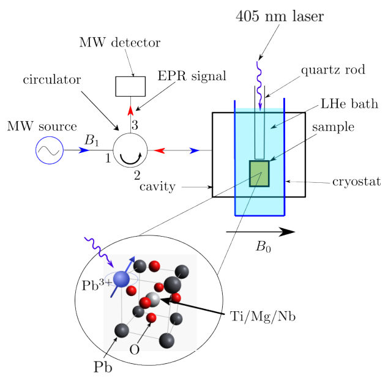
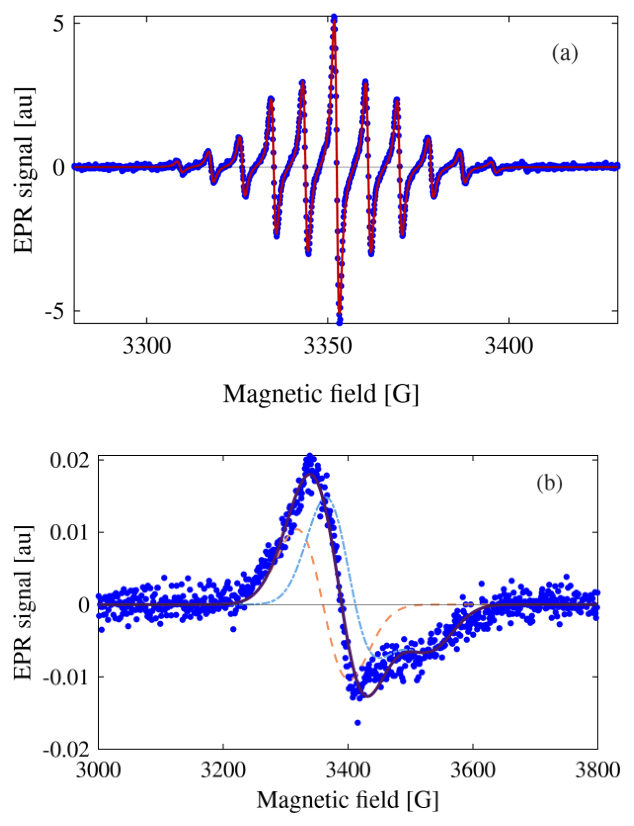
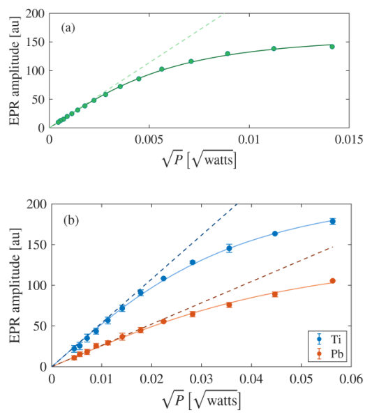
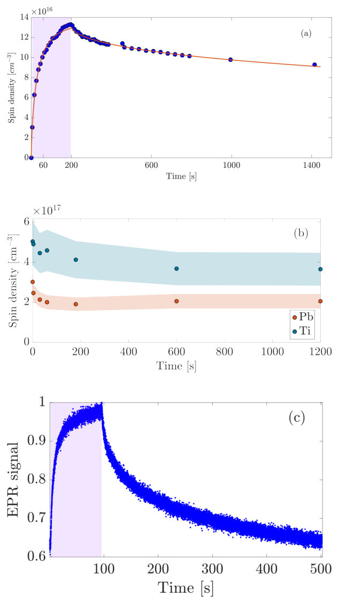
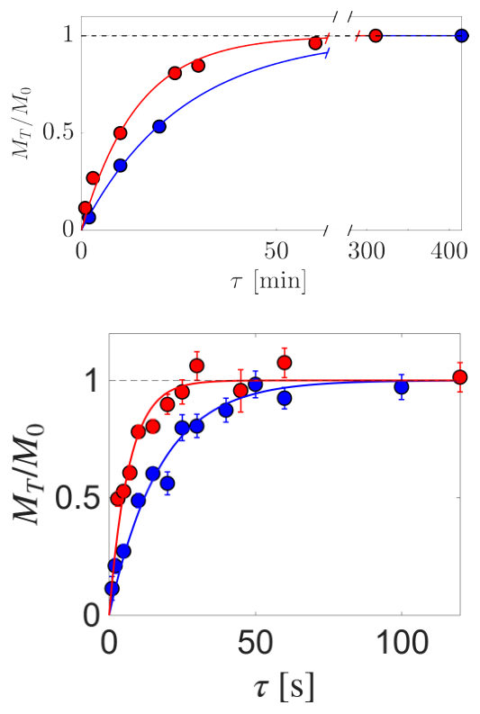
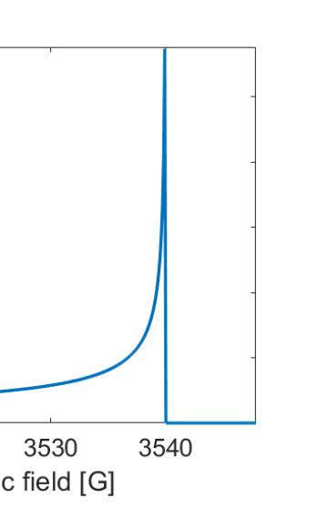
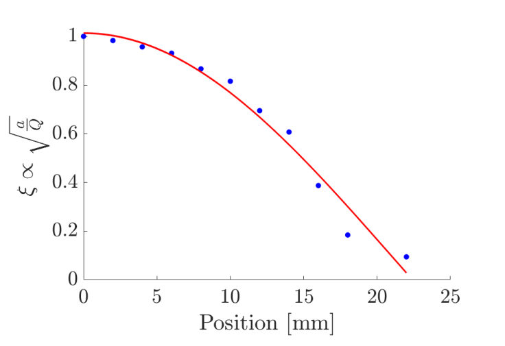
Main problem. Controlling the nuclear spin population relaxation time (T1) in macroscopic spin ensembles at cryogenic temperatures, where phonon freeze-out leads to prohibitively long relaxation times.
Main result. Demonstrated that 405 nm laser illumination can optically control the 207Pb nuclear T1 relaxation time by creating transient paramagnetic centers (Pb3+ and Ti3+) in ferroelectric crystals.
Method. Used X-band Electron Paramagnetic Resonance (EPR) spectroscopy and saturation-recovery Nuclear Magnetic Resonance (NMR) at 10 K under 405 nm laser illumination.
Summary. This paper demonstrates a method to optically control the nuclear spin relaxation time in lead-based ferroelectric crystals. By using a 405 nm laser, the researchers induce paramagnetic centers that act as a spin bath, effectively shortening the long T1 times caused by cryogenic temperatures. This technique allows for faster thermal polarization and dynamic nuclear polarization. Such control is a critical step toward improving the sensitivity of NMR-based searches for dark matter, such as axion-like particles.
Model / system. The system consists of 207Pb nuclear spin ensembles in lead-containing ferroelectric crystals (PbTiO3 and PMN-PT). The model relates the nuclear relaxation rate to the density of photoinduced paramagnetic centers using a Zeeman and hyperfine interaction Hamiltonian.
Key observables. EPR spectra (voltage signal), g-factors, linewidths, spin number densities, and nuclear T1 relaxation times.
Important parameters / regimes. Temperature of 10 K; 405 nm laser wavelength; spin densities of approximately 10^17 cm^-3; reduction of T1 from 1550 s to 850 s at 40 MHz.
Assumptions / limitations. Isotropic hyperfine interaction assumption for certain centers; powder-like orientational averaging for Ti3+ due to lattice disorder; treating unresolved hyperfine structure as Gaussian broadening.
Figures summary. Figure 1 shows the experimental setup; Figure 2 shows the EPR spectrum of PT; Figure 7 shows the spatial dependence of the microwave field along the cavity axis.
Paper structure. The paper introduces the problem of long T1 times, describes the experimental setup and materials, details the EPR characterization of paramagnetic centers, presents NMR results for T1 control, and concludes with a model relating relaxation to spin density.
Why it may be interesting. The ability to optically manipulate relaxation rates in a solid-state spin bath is highly relevant to open quantum systems and the development of efficient initialization protocols for quantum sensing and precision metrology.
Macroscopic spin ensembles in solids are powerful platforms for quantum sensing and precision metrology. A key challenge is controlling the nuclear spin population relaxation time $T_1$, which can become prohibitively long at cryogenic temperatures due to phonon freeze-out. We demonstrate optical control of the $T_1$ relaxation time of the $^{207}$Pb nuclear spin ensemble in lead-containing ferroelectric crystals PbTiO$_3$ (PT) and (PbMg$_{1/3}$Nb$_{2/3}$O$_3$)$_{2/3}$-(PbTiO$_3$)$_{1/3}$ (PMN-PT). Using X-band electron paramagnetic resonance (EPR) spectroscopy at 10 K, we characterize light-induced paramagnetic centers created by 405 nm laser illumination. In PT, we observe paramagnetic Pb$^{3+}$ centers and their hyperfine interaction with nearby nuclear spins. In PMN-PT, we identify two populations: isotropic Pb$^{3+}$ centers and anisotropic Ti$^{3+}$ centers occupying $d$-orbitals, with spin number densities of $(2.5 \pm 1.0) \times 10^{17}$ cm$^{-3}$ and $(4.1 \pm 1.7) \times 10^{17}$ cm$^{-3}$, respectively. Power-dependent EPR measurements enable extraction of spin relaxation times. We investigate the ionization and recombination dynamics of these transient paramagnetic centers. Using saturation-recovery nuclear magnetic resonance, we demonstrate that laser illumination reduces the $^{207}$Pb nuclear $T_1$ by approximately a factor of two, from $(17 \pm 2)$ s to $(7 \pm 1)$ s at 4.6 MHz, and from $(1550 \pm 40)$ s to $(850 \pm 70)$ s at 40 MHz. We develop a model relating the nuclear relaxation rate to the density of photoinduced paramagnetic centers. This optical control of nuclear spin relaxation provides a pathway toward accelerated thermal polarization and dynamic nuclear polarization in solid-state NMR-based precision measurements, including searches for axion-like dark matter.
Authors: Quentin Remy, Stéphane Mangin
Type: both · Category: other · PDF: https://arxiv.org/pdf/2604.25431v1
Analysis basis: full PDF text, analyzed in chunks
Topic relevance: non-equilibrium dynamics 3/5 · spintronics-quantum-optics interface 2/5
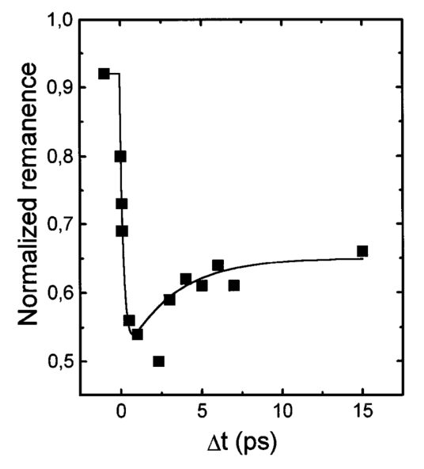
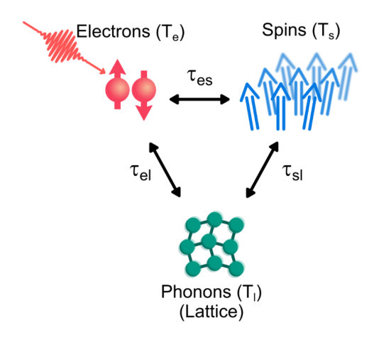
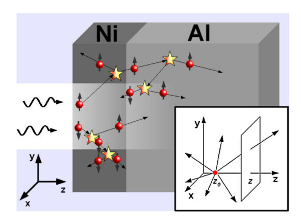
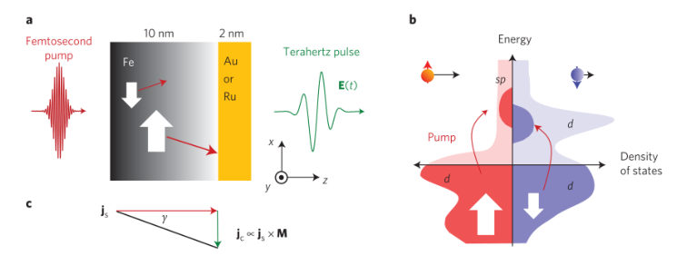
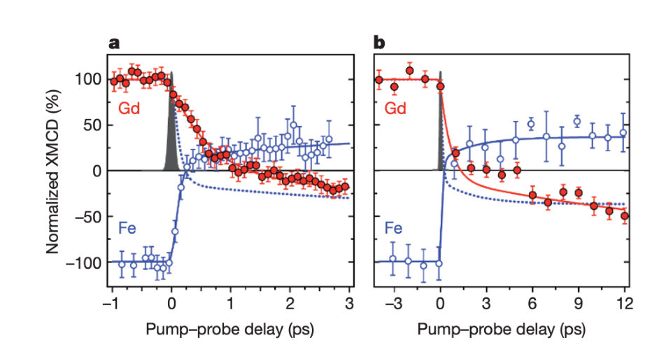
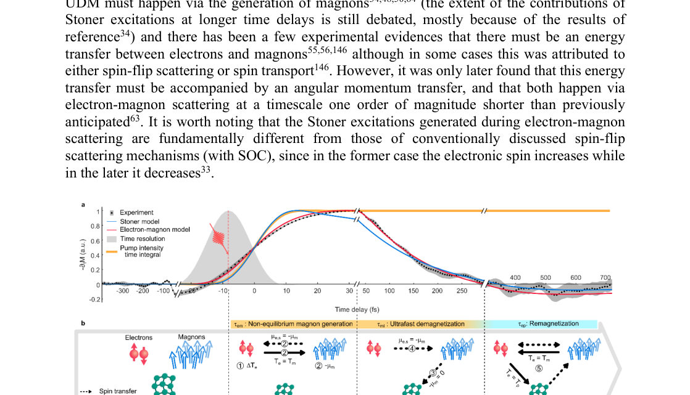
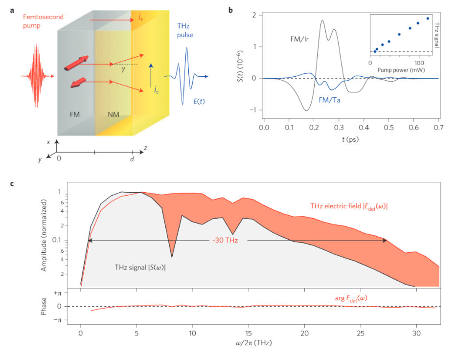
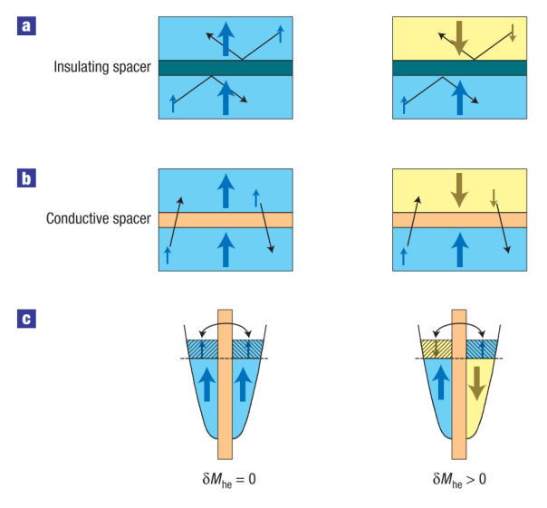
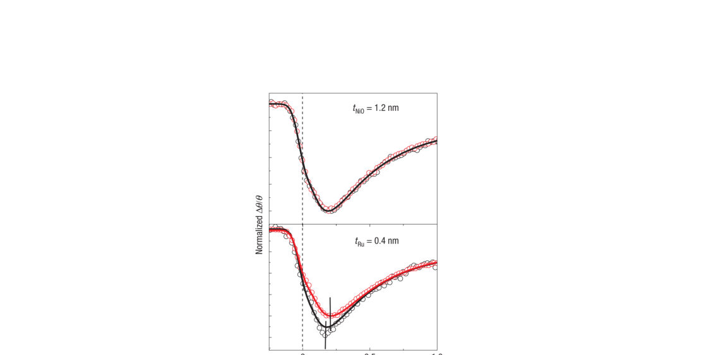
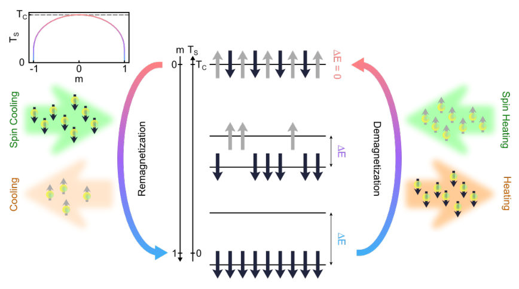
Main problem. Understanding the microscopic mechanisms of angular momentum transfer and redistribution in magnetic systems during ultrafast (femtosecond to picosecond) demagnetization and its evolution into ultrafast spintronic applications.
Main result. The paper traces the 30-year evolution from observing sub-picosecond magnetization quenching to developing deterministic all-optical switching and ultrafast spin-injection devices, highlighting that angular momentum is redistributed among spin, orbital, and lattice reservoirs rather than destroyed.
Method. A review of experimental techniques including femtosecond pump-probe spectroscopy, MOKE, THz emission, and XMCD, alongside theoretical frameworks like the three-temperature model, TDDFT, and superdiffusive transport models.
Summary. This review paper provides a comprehensive 30-year history of the field of ultrafast magnetism. It explains how the discovery of sub-picosecond magnetization quenching led to new ways of controlling spin via light. The authors detail the transition from fundamental studies of spin-lattice relaxation to the engineering of ultrafast spintronic devices like all-optical switches. The work highlights the complex interplay between electrons, spins, and phonons in non-equilibrium states. Ultimately, it outlines the potential for high-speed, energy-efficient information processing using femtosecond-scale magnetic control.
Model / system. The review covers various magnetic systems including ferromagnets (Ni, Fe), rare-earth transition-metal (RE-TM) ferrimagnets (GdFeCo), and heterostructures like spin valves and magnetic tunnel junctions.
Key observables. Magnetization dynamics (quenching and recovery), spin currents, spin accumulation, THz radiation, and magnon/electron/phonon temperatures.
Important parameters / regimes. Femtosecond to picosecond timescales, femtojoule energy scales, spin-orbit coupling, spin-mixing conductance, and non-equilibrium regimes.
Assumptions / limitations. The review discusses the limitations of the three-temperature model, noting it fails to capture certain non-equilibrium features like magnon generation without demagnetization.
Figures summary. Figure 1 shows Ni magnetization quenching via MOKE; Figure 2 illustrates the three-temperature model; Figure 3 depicts superdiffusive spin transport; Figure 4 shows THz emission from bilayers; Figure 6 compares experimental data.
Paper structure. The paper follows a historical and thematic progression: starting with the discovery of ultrafast demagnetization, moving to the identification of microscopic angular momentum transfer mechanisms, then to the development of all-optical switching (AOS), and finally to the integration of these phenomena into ultrafast spintronic devices.
Why it may be interesting. The study of rapid angular momentum redistribution between coupled reservoirs (spin, orbital, and lattice) and the dynamics of strongly out-of-equilibrium quantum materials provides insights relevant to open quantum systems and non-equilibrium many-body dynamics.
The discovery of femtosecond laser-induced ultrafast demagnetization in 1996 opened a new field, femtomagnetism, in which magnetic order can be quenched on timescales shorter than a picosecond. This seminal observation revealed that angular momentum can be transferred out of the spin system with unprecedented speed, launching intense efforts to disentangle the roles of electrons, phonons, and spins in the non-equilibrium regime. Soon it became evident that ultrafast demagnetization generates spin-flips, spin polarization, magnons and spin currents, providing new channels for angular-momentum flow. These insights laid the foundation for linking femtomagnetism with spintronics. An emblematic breakthrough in this evolution is the helicity-independent single-pulse all-optical switching (AOS) observed in rare-earth transition-metal (RE-TM) ferrimagnets such as GdFeCo. This mechanism, operating at femtojoule-scale energies and without external magnetic fields, establishes RE-TM alloys as benchmark systems for understanding and exploiting angular-momentum flow at the femtosecond timescale. Building on these concepts, the combination of ultrafast optical excitation with spintronic devices has demonstrated deterministic magnetization reversal driven by femtosecond pulses in spin valves and tunnel junctions, including rare-earth-free systems. Ultrafast spin injection, acting analogously to spin transfer torque but operating three orders of magnitude faster, allows reversal of both ferromagnetic and ferrimagnetic layers. By enabling ultrafast and energy-efficient switching, ultrafast spintronics promises scalable technologies for high-speed information processing while raising fundamental questions about angular momentum transfer in strongly out-of-equilibrium quantum materials.
Authors: Hiroto Mizoguchi, Yutaro Nagae, Yasuhiro Asano, Satoshi Ikegaya
Type: theory · Category: quantum information and computing · PDF: https://arxiv.org/pdf/2604.25169v1
Analysis basis: full PDF text, analyzed in chunks
Topic relevance: entanglement & information structure 3/5 · Keldysh / 2PI / non-Gaussian methods 2/5
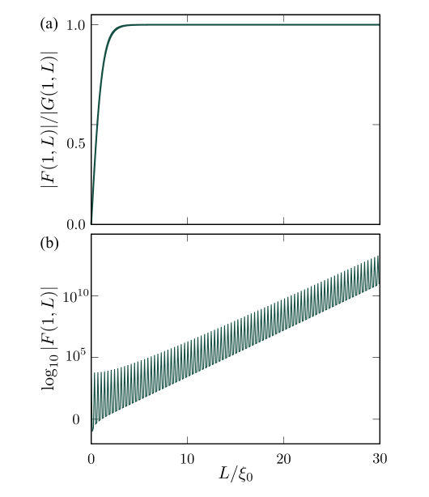
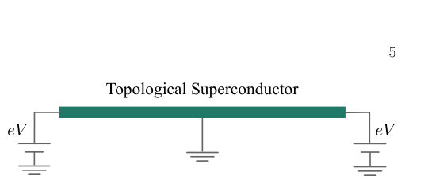
Main problem. The paper investigates the manifestation of Majorana nonlocality through the lens of pair correlations (anomalous Green's functions) in finite topological superconductors, addressing the gap between quasiparticle-based and pair-correlation-based perspectives.
Main result. The authors identify that in the low-frequency regime, normal and anomalous Green's functions become identical up to a phase factor and exhibit pronounced nonlocality, where nonlocal correlations grow exponentially with system length while local correlations vanish.
Method. The study employs an analytical derivation of the Matsubara Gor'kov Green's function using the Dyson equation and the hard-wall limit, which is then verified numerically using the recursive Green's function method.
Summary. This paper explores how Majorana nonlocality is reflected in the pair correlations of finite topological superconductors. The authors show that at low energies, the single-particle and Cooper-pair correlations become essentially identical and exhibit a striking nonlocality where correlations between opposite ends of the system grow exponentially with length. This discovery links the unusual transport properties, such as positive noise cross-correlation, directly to the emergence of unconventional nonlocal Cooper pairs. These findings advance the understanding of Majorana-based states for potential use in topological quantum computing.
Model / system. The system is a finite one-dimensional Kitaev chain model representing topological superconductors, such as semiconductor-superconductor hybrid nanowires or magnetic atom chains.
Key observables. Normal and anomalous Green's functions (G and F), fermion parity, scattering coefficients (elastic cotunneling and crossed Andreev reflection), and zero-frequency noise power cross-correlation.
Important parameters / regimes. Low-frequency/low-energy regime (omega << Delta), system length (L) relative to coherence length (xi_0), and the Majorana coupling energy (E_M).
Assumptions / limitations. The analysis assumes a 1D Kitaev chain model and focuses on the low-frequency/low-energy regime where the system length is much larger than the coherence length.
Figures summary. Figure 1(a) shows the ratio of anomalous to normal Green's functions remains 1 across system lengths, while Figure 1(b) demonstrates the exponential growth of nonlocal correlations with system length.
Paper structure. The paper introduces the problem of Majorana nonlocality, derives the Gor'kov Green's functions for a finite system, establishes the equivalence of single-particle and pair correlations, links these correlations to fermion parity and transport anomalies, and concludes with implications for quantum computation.
Why it may be interesting. This work provides a new perspective on Majorana nonlocality through pair correlations, which is a fundamental concept for developing topological quantum computation and understanding entanglement in superconducting systems.
We identify two fundamental properties of the Gor'kov Green's function of finite one-dimensional topological superconductors. In the low-frequency (low-energy) regime, the normal and anomalous Green's functions, which describe single-particle and Cooper-pair correlations, respectively, become identical up to a phase factor. Moreover, they exhibit pronounced nonlocality: correlations between the two ends of the system grow exponentially with system length, whereas local correlations at either end vanish in the zero-frequency limit. These striking features signify the emergence of unconventional nonlocal Cooper pairs associated with a nonlocal fermionic mode composed of hybridized Majorana end modes. The nonlocal Cooper pairs are directly linked to fermion parity and to the nonlocal transport properties of finite topological superconductors. By focusing on pair correlations, our analysis advances the understanding of Majorana nonlocality, a key concept in topological quantum computation.
Authors: Grzegorz Krasucki, Artur O. Slobodeniuk, Kacper Walczyk, Katarzyna Olkowska-Pucko, Kenji Watanabe, Takashi Taniguchi, Adam Babiński, Maciej R. Molas
Type: experiment · Category: other · PDF: https://arxiv.org/pdf/2604.25553v1
Analysis basis: full PDF text, analyzed in chunks
Topic relevance: quantum optics experiment 2/5 · spintronics-quantum-optics interface 2/5
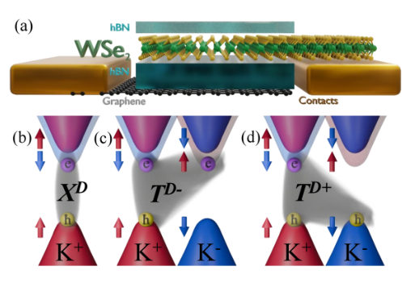
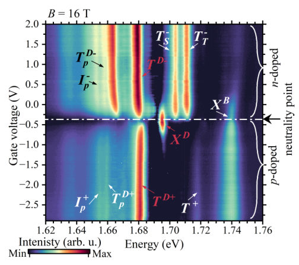
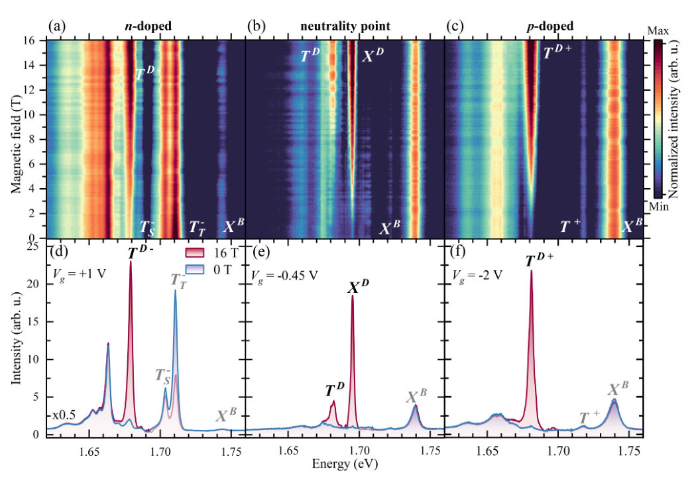
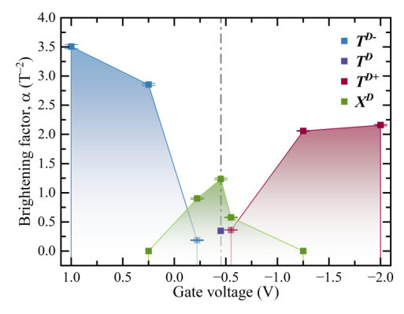
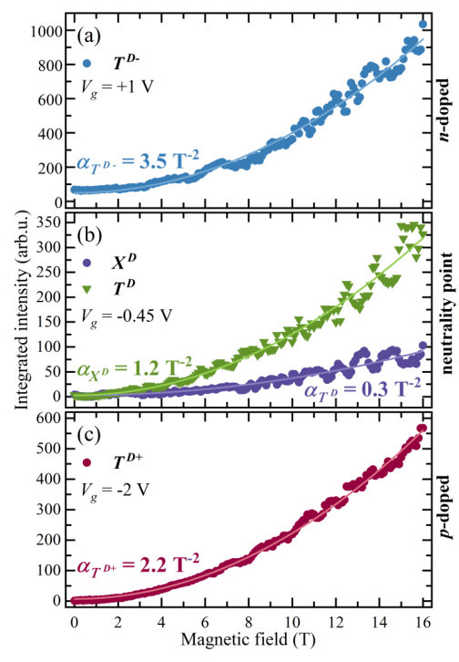
Main problem. The study investigates how electrostatic doping affects the in-plane magnetic-field-induced brightening (optical activation) of dark excitons and dark trions in monolayer WSe2.
Main result. The researchers found a strong, non-trivial dependence of brightening rates on carrier density, revealing a pronounced asymmetry between the neutral dark exciton and charged dark trions.
Method. Low-temperature micro-photoluminescence spectroscopy was performed on a gated WSe2 heterostructure under in-plane magnetic fields up to 16 T, with data analyzed using a steady-state rate-equation model.
Summary. This paper explores how changing the number of electrons or holes in a WSe2 monolayer affects the way dark excitons and trions become visible under a magnetic field. By using a gate voltage, the authors tune the material through n-type, neutral, and p-type regimes. They discovered that the way these dark states 'brighten' is highly asymmetric depending on the doping. This work provides a deeper understanding of how charge carriers influence the optical properties of transition metal dichalcogenides.
Model / system. The physical system is a monolayer WSe2 (S-TMD) heterostructure (hBN/WSe2/hBN/graphene) where carrier density is tuned via gate voltage through n-type, neutral, and p-type regimes.
Key observables. Integrated PL intensities of bright and dark excitonic complexes (X_B, X_D, T_D-, T_D+), brightening factors (alpha), and carrier densities.
Important parameters / regimes. In-plane magnetic field (up to 16 T), gate voltage, carrier density (10^10 to 10^12 cm^-2), and temperature (10 K).
Assumptions / limitations. The rate-equation model assumes thermal dissociation is negligible when energy splitting is much larger than kBT and that the brightening factor is proportional to the dark complex population and bright analogue intensity.
Figures summary. Figure 1 shows the device schematic; Figure S1 provides a PL map of various complexes across different doping regimes; Figure S2 displays magneto-PL maps and plots of integrated intensities vs. magnetic field with quadratic fits.
Paper structure. The paper introduces the problem of dark exciton activation, describes the experimental device and spectroscopic setup, presents the results of doping-dependent brightening, provides a rate-equation model to explain the observed asymmetry, and concludes with the implications for TMD carrier dynamics.
Why it may be interesting. The study explores the controlled optical activation of spin-forbidden states and the complex many-body dynamics of excitonic complexes, which is relevant to understanding light-matter interactions and carrier recombination in two-dimensional systems.
Optically dark excitonic states play a critical role in the valleytronic, electronic, and optical properties of monolayer semiconducting transition metal dichalcogenides. Here, we investigate how electrostatic doping affects the in-plane magnetic-field-induced activation of dark excitonic complexes in a gated WSe$_2$ monolayer. By continuously tuning the carrier density via gate voltage, we access $n$-type, charge-neutral, and $p$-type regimes and track the corresponding brightening dynamics. We find that the brightening rates of the dark negative trion ($T^{D-}$), dark neutral exciton ($X^{D}$), and dark positive trion ($T^{D+}$) exhibit a strong and nontrivial dependence on doping. In particular, the pronounced asymmetry in the brightening behaviour of the neutral $X^{D}$ complex and the charged $T^{D-}$ and $T^{D+}$ trions reveals distinct underlying carrier interactions, which we describe using a rate-equation model for their steady-state populations. These findings highlight the key role of dark excitonic complexes in governing the optical response and carrier dynamics of doped S-TMD monolayers.
Authors: Nassar Doudin, Jian Jiang, Chun Tang, Xiao Cheng Zeng, Mohammed Th. Hassan
Type: both · Category: statistical mechanics · PDF: https://arxiv.org/pdf/2604.25114v1
Analysis basis: full PDF text, analyzed in chunks
Topic relevance: driven-dissipative phase transition 2/5 · non-equilibrium dynamics 2/5
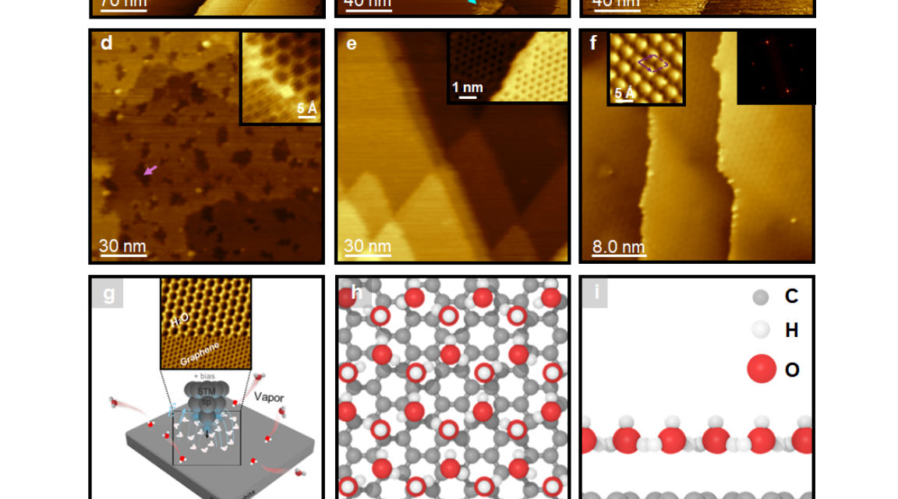
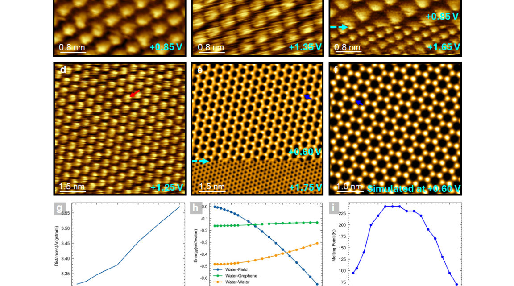
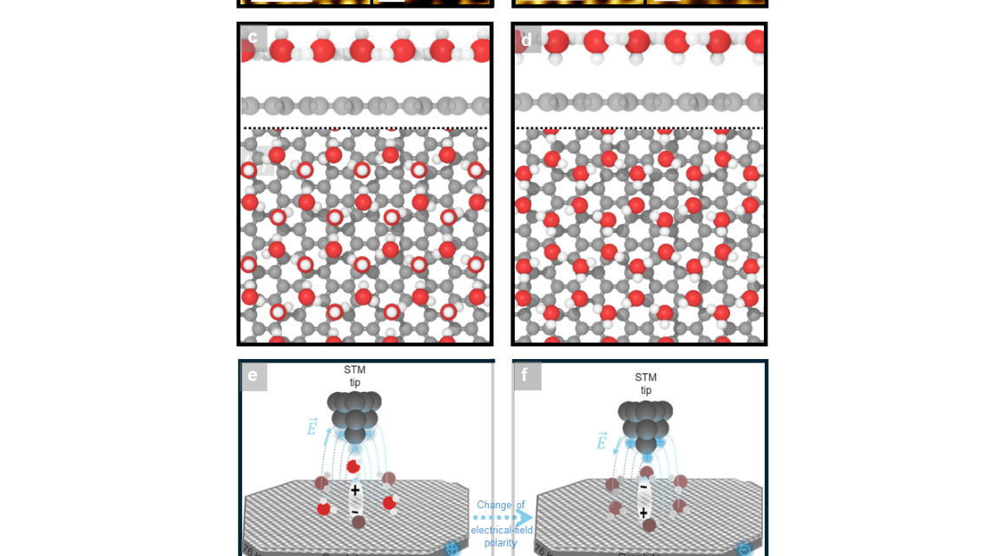
Main problem. Achieving deterministic, atomic-scale control over hydrogen-bond networks and understanding how external electric fields drive phase transitions and structural reconfiguration.
Main result. An external electric field enables the reversible transition from a mobile, non-wetting water phase to an ordered hexagonal ice monolayer on graphite through interfacial charge redistribution.
Method. Low-temperature scanning tunneling microscopy (STM) and non-contact AFM are combined with first-principles DFT and classical molecular dynamics simulations.
Summary. This paper demonstrates how an external electric field can be used to precisely control the structure and electronic properties of a 2D ice monolayer on graphite. By tuning the voltage bias, researchers can trigger the condensation of mobile water into an ordered hexagonal lattice and even switch the orientation of molecular dipoles. The mechanism is driven by interfacial charge redistribution rather than simple geometric effects. This work provides a new way to electrically program molecular organization at the atomic scale.
Model / system. A monolayer of hexagonal ice on a hydrophobic graphite (HOPG) substrate, characterized by a coupled electromechanical system of molecular dipoles and interfacial charge.
Key observables. Lattice strain, conductance states, molecular dipole orientation (H-up vs. H-down), and tunneling contrast.
Important parameters / regimes. External electric field (via voltage bias), temperature (76 K), and water dose (Langmuirs).
Assumptions / limitations. The observed dynamics are assumed to be independent of STM tip effects; simulations use the TIP4P/Ice water model.
Figures summary. Fig 1 shows the transition from clean graphite to mobile water to ordered ice; Fig 2 demonstrates bias-dependent evolution and MD-simulated melting; Fig 3 shows lattice strain and quantized conductance; Fig 4 illustrates polarity-driven dipole switching.
Paper structure. The paper introduces the challenge of H-bond control, demonstrates field-induced nucleation of ice, explores the electromechanical coupling and lattice strain, details the reversible dipole switching via polarity reversal, and concludes with the mechanism of interfacial charge redistribution.
Why it may be interesting. The study demonstrates a programmable, many-body system where an external field tunes the energy landscape, driving transitions between stable, bistable, and unstable phases, which is relevant to understanding driven-dissipative dynamics and phase transitions in molecular assemblies.
Hydrogen-bond networks govern molecular structure and function across chemistry, biology and materials science, yet their deterministic control at the atomic scale remains a central challenge (1-9).Here, we directly visualize how an external electric field enables reversible control of a hydrogen-bond network in monolayer ice on graphite through interfacial charge redistribution. Low-temperature scanning tunnelling microscopy reveals a field-driven transition from a mobile, physisorbed, non-wetting water phase to an ordered hexagonal monolayer, enabling deterministic nucleation, growth and complete wetting on an otherwise inert surface. Systematic variation of the field induces continuous lattice strain coexisting with discrete conductance states, revealing coupled structural and electronic responses. Reversal of the field polarity drives collective dipolar inversion, enabling switching between symmetry-equivalent configurations without disrupting the lattice. Supported by first-principles theory and bias-dependent imaging, these effects arise from field-induced modification of the interfacial electronic structure rather than purely geometric or orientational effects. These results establish interfacial charge redistribution as a general mechanism for electrically programming hydrogen-bond networks, providing a route to control molecular organization, electronic properties and collective dipolar order at interfaces.
Authors: Sanskar Sharma, Ipsita Mandal
Type: theory · Category: other · PDF: https://arxiv.org/pdf/2604.25758v1
Analysis basis: full PDF text, analyzed in chunks
Topic relevance: Keldysh / 2PI / non-Gaussian methods 2/5 · non-equilibrium dynamics 2/5
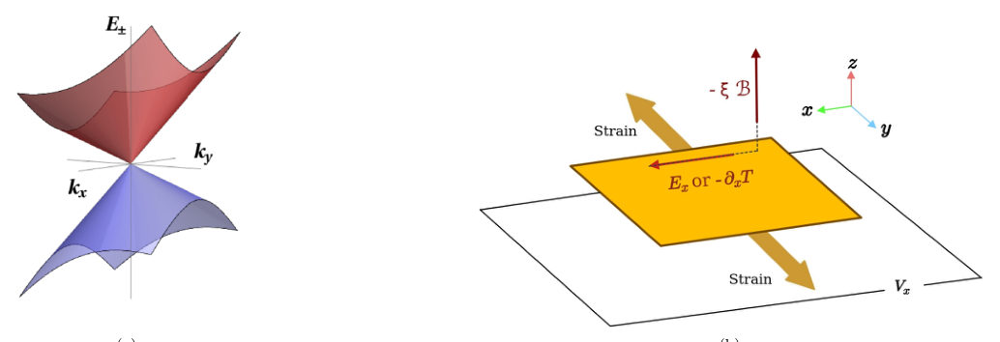
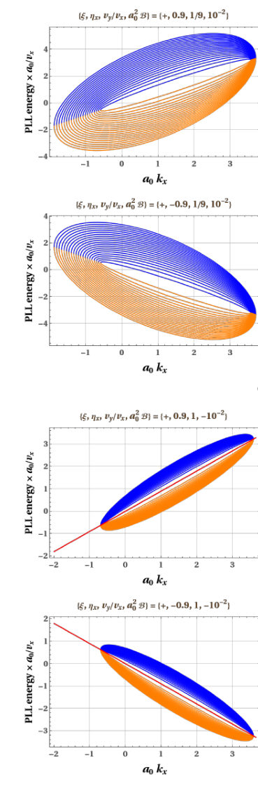
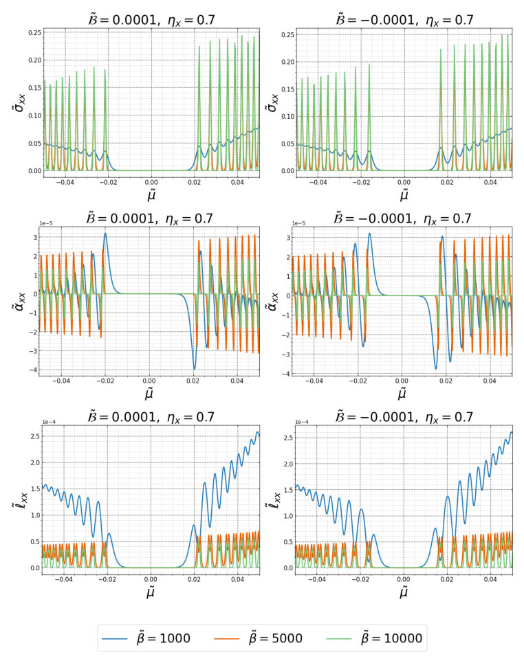
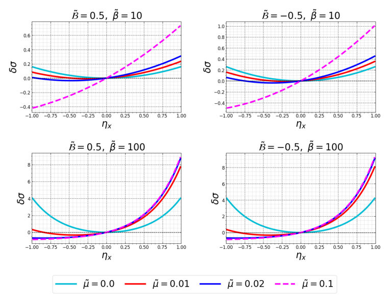
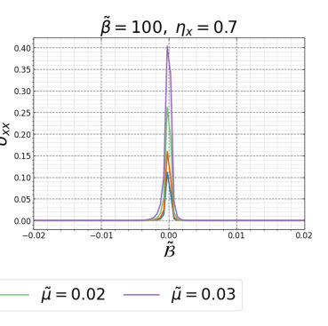
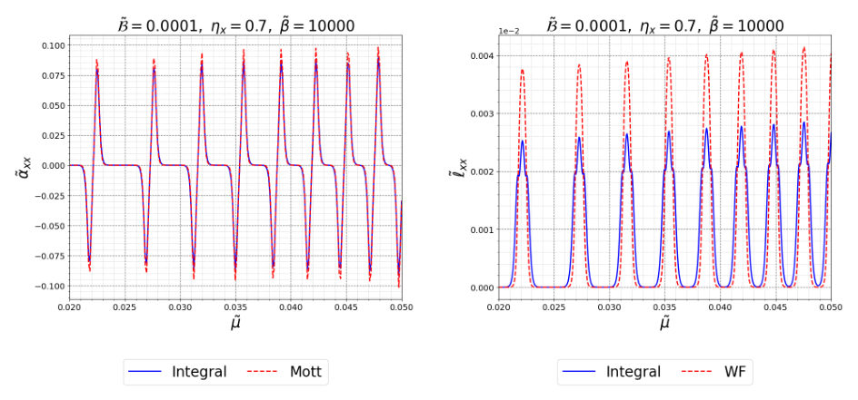
Main problem. Investigating how the interplay between tilted Dirac cones and strain-induced pseudomagnetic fields affects the dispersion and longitudinal transport properties of 2D anisotropic Dirac systems.
Main result. The authors show that pseudo-Landau levels (PLLs) are dispersive due to the tilt, leading to finite longitudinal group velocities and non-vanishing transport coefficients, which can be tuned via strain.
Method. The study uses a semiclassical Boltzmann framework and solves the eigenvalue equation for the Hamiltonian using a Sturm-Liouville approach and confluent hypergeometric functions.
Summary. This paper explores how mechanical strain and the resulting pseudomagnetic fields modify the electronic properties of 2D Dirac materials. Unlike standard Landau levels, the levels in these strained, tilted systems are dispersive, meaning they depend on momentum. This dispersion allows for finite longitudinal transport that can be controlled by tuning the tilt and strain. The study provides a theoretical framework for using mechanical deformation to engineer conductance in valleytronic devices.
Model / system. A 2D anisotropic Dirac system (such as graphene or organic conductors) subject to uniaxial strain, modeled by a generalized Weyl-like Hamiltonian with a tilt parameter and a strain-induced pseudogauge field.
Key observables. Longitudinal electrical conductivity, thermoelectric conductivity, and thermal conductivity, as well as the validity of the Mott relation and Wiedemann-Franz law.
Important parameters / regimes. Tilt parameter (eta_x), pseudomagnetic field strength (B), chemical potential (mu), temperature (T), and velocity anisotropy (v_y/v_x).
Assumptions / limitations. Assumes a type-I (undertilted) phase, small strain magnitude, and that the strain primarily affects off-diagonal hopping terms.
Figures summary. Figure 1 shows tilted energy bands and an experimental setup schematic; Figure 2 displays the dispersion of pseudo-Landau levels; Figure 3 plots longitudinal response coefficients as functions of chemical potential.
Paper structure. The paper begins by defining the tilted Hamiltonian and strain mechanism, derives the dispersive pseudo-Landau level spectrum and wavefunctions, applies the Boltzmann formalism to calculate transport coefficients, and concludes by testing the validity of standard transport relations.
We investigate the transport signatures of pseudo-Landau levels (PLLs) in two-dimensional anisotropic Dirac systems with tilted cones, whose effective bandstructure results from strain-induced pseudogauge fields. In contrast to conventional Landau quantisation, the PLLs exhibit explicit momentum-dependence by being dispersive, leading to finite longitudinal group-velocities. We analyse the transport properties within the semiclassical Boltzmann framework by computing the electrical, thermoelectric, and thermal response in the linear regime, which acquire nonzero longitudinal components. We also check the validity of the Mott relation and Wiedemann-Franz law in our system. Our results provide a unified framework for understanding the interplay between tilted spectrum and structural deformation in affecting quantum transport, and suggest unambiguous experimental signatures in strain-engineered systems.
Authors: Vedran Jelic, Kaedon Cleland-Host, Stefanie Adams, Mohamed Hassan, Austin Hayes, Tyler L. Cocker
Type: both · Category: other · PDF: https://arxiv.org/pdf/2604.25146v1
Analysis basis: full PDF text, analyzed in chunks
Topic relevance: non-equilibrium dynamics 2/5
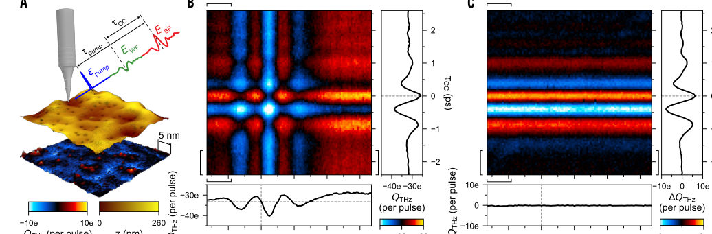
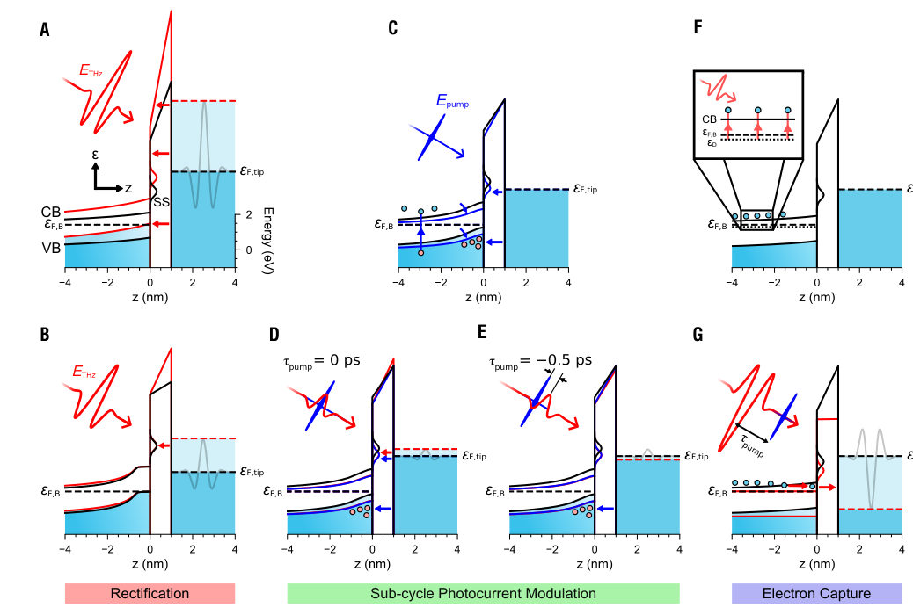
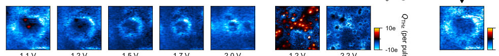
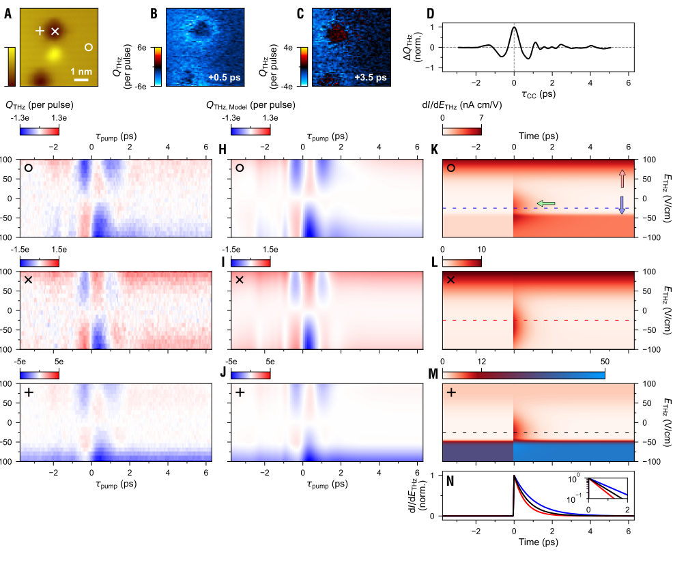
Main problem. Resolving ultrafast (femtosecond to picosecond) photocarrier motion and the resulting dynamic reshaping of the potential energy landscape at atomic length scales.
Main result. Demonstrated that lightwave-driven THz-STM can track transient electronic structure and time-dependent band bending near individual surface defects with unprecedented spatio-temporal resolution.
Method. An optical-pump/THz-probe configuration using femtosecond near-infrared pulses and a strong-field THz pulse, combined with THz time-domain spectroscopy (THz-TDS) to disentangle coherent field dynamics from sample response.
Summary. This paper presents a new regime of ultrafast tunneling spectroscopy using lightwave-driven THz-STM. By using an optical pump and a THz probe, the researchers can image how photoexcited carriers dynamically reshape the electronic landscape at the atomic scale. They successfully disentangle different physical processes, such as charge rectification and photocurrent modulation, near surface defects. This technique provides unprecedented spatio-temporal resolution for studying carrier transport and band alignment in semiconductors.
Model / system. The physical system is an n-type silicon-doped GaAs(110) surface containing atomic-scale defects like gallium vacancies. The experimental platform is lightwave-driven terahertz scanning tunneling microscopy (THz-STM) coupled with 3D Poisson solver (SEMITIP) simulations.
Key observables. Transient photocurrents, time-dependent band bending, rectified charge (Q_THz), differential rectified charge (delta Q_THz), and time-dependent differential conductance.
Important parameters / regimes. Femtosecond to picosecond temporal scales; atomic-scale spatial resolution; peak THz electric fields around -100 V/cm; photocurrent lifetimes ranging from ~580 fs to 910 fs.
Assumptions / limitations. The THz waveform shape remains invariant under photoexcitation, preventing the study of the evolving dielectric function; the junction remains in the tunneling regime without reaching field emission.
Figures summary. Fig 1: STM/THz-STM topography and defect distribution; Fig 2: Poisson simulations of rectification, modulation, and electron capture; Fig 3: Lateral band bending and tip-defect distance dependence; Fig 4: 2D THz-STS maps and extracted time-dependent differential conductance.
Paper structure. Introduction of the challenge in resolving ultrafast dynamics; description of the THz-STM experimental setup and THz-TDS waveform measurement; presentation of simulation results for physical mechanisms (rectification, modulation, capture); experimental demonstration of tracking band bending at defects; and discussion of extracted carrier lifetimes.
Atomic-scale disorder shapes the potential energy landscape traversed by photoexcited charge carriers, while the carriers themselves also dynamically reshape this landscape. However, resolving ultrafast photocarrier motion at atomic length scales has remained a central challenge in materials science. Here, we demonstrate that lightwave-driven terahertz scanning tunneling microscopy (THz-STM) provides access to these dynamics by probing the ultrafast evolution of local electronic structure following resonant interband excitation. Applying this approach to the photoexcited GaAs(110) surface, we image the resulting femtosecond carrier dynamics by tracking the transient photocurrents produced by ultrafast shifts in the energy alignment of surface and bulk electronic states near individual surface defects. Supported by modeling, we experimentally resolve the time-dependent band bending produced by photoinduced charge carriers across the atomic-scale landscape of the sample surface. Crucially, we employ terahertz time-domain spectroscopy in the tip near-field to disentangle the coherent sub-cycle dynamics induced by the terahertz driving field from the intrinsic sample response. We establish a new regime of ultrafast tunneling spectroscopy that captures transient electronic structure and dynamic band alignment with unprecedented spatio-temporal resolution, which has significant implications for understanding carrier transport, defect-mediated processes, and the development of optoelectronic technologies based on dynamically tunable materials.
Authors: Elias Greil, Alba de las Heras, Angel Rubio, Anna Galler
Type: theory · Category: other · PDF: https://arxiv.org/pdf/2604.25483v1
Analysis basis: full PDF text, analyzed in chunks
Topic relevance: non-equilibrium dynamics 2/5
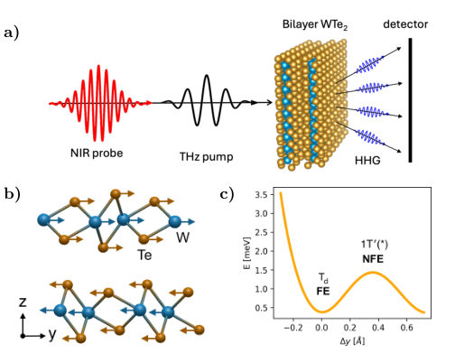
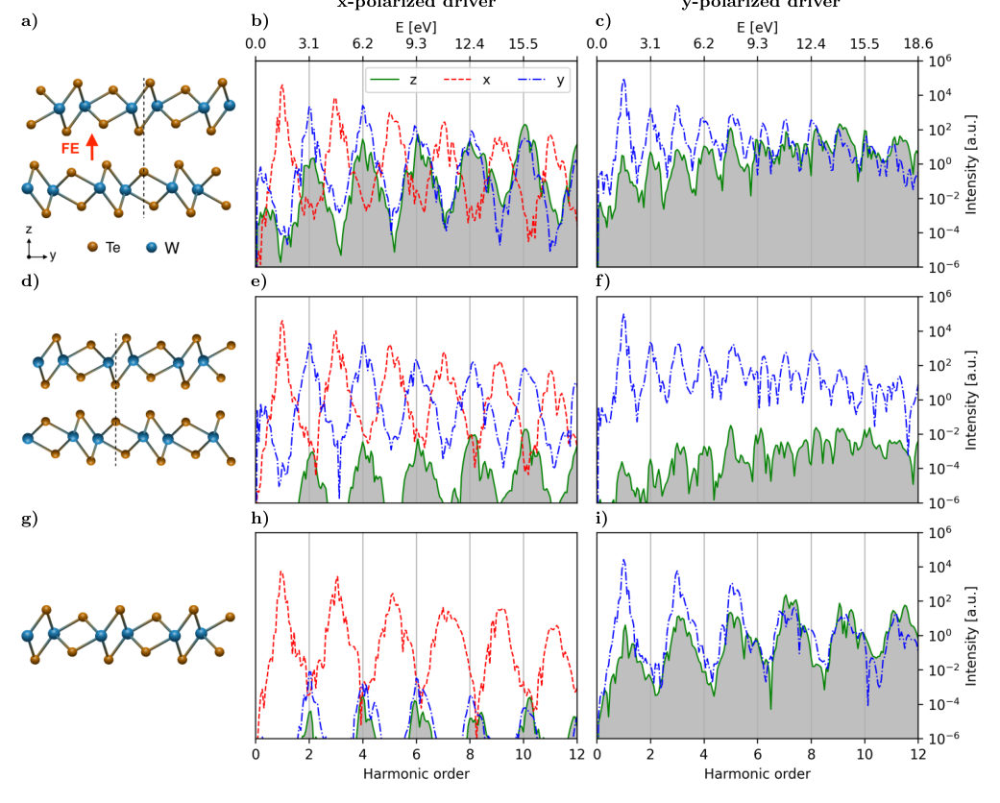
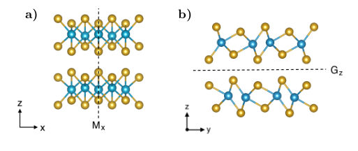
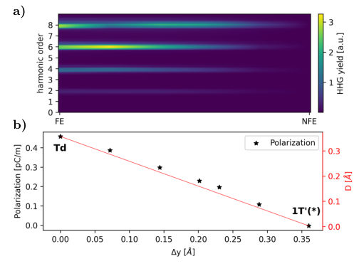
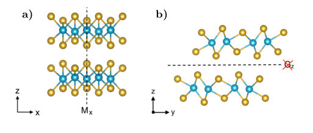
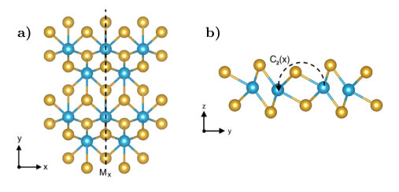
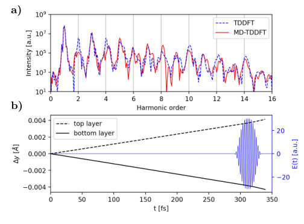
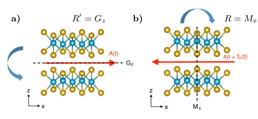
Main problem. Investigating whether high-harmonic generation (HHG) can serve as an all-optical, non-invasive probe to identify and monitor sliding ferroelectricity and lattice symmetry in 2D materials.
Main result. The breaking of glide-plane symmetry in the ferroelectric phase of bilayer WTe2 produces robust, detectable z-polarized harmonics, providing a spectroscopic fingerprint for the ferroelectric state.
Method. First-principles simulations using time-dependent density functional theory (TDDFT) and molecular dynamics (MD-TDDFT) implemented in the Octopus code, combined with Jones matrix formalism for symmetry analysis.
Summary. This paper demonstrates that high-harmonic generation can be used as a powerful optical tool to detect ferroelectricity in 2D materials. By studying bilayer WTe2, the authors show that the breaking of specific crystal symmetries during interlayer sliding leads to unique z-polarized harmonic signals. The study uses advanced TDDFT simulations to prove that these electronic signatures are robust and decoupled from slow lattice vibrations. This provides a non-invasive way to monitor the switching of ferroelectric states in quantum materials.
Model / system. Bilayer Td-WTe2, a 2D semimetal featuring switchable out-of-plane ferroelectric polarization driven by interlayer sliding/shear motion.
Key observables. Polarization-resolved high-harmonic spectra (x, y, and z components) and the emergence of even vs. odd harmonic orders.
Important parameters / regimes. 800 nm NIR pulse, 16-cycle duration, 1 TW/cm2 peak intensity, and a 0.24 THz interlayer shear phonon mode.
Assumptions / limitations. The Ehrenfest approximation is used for electron-ion coupling; the translational component of the glide-plane operation is ignored in symmetry analysis; spin-orbit coupling and spin polarization are neglected.
Figures summary. Figure 1 shows the THz pump-NIR probe setup and the energy profile of the switching pathway; Figure 2 compares HHG spectra for different phases; Figure 7 compares MD-TDDFT with fixed-ion simulations; Figure 8 illustrates symmetry-driven selection rules.
Paper structure. The paper introduces the problem of probing sliding ferroelectricity, describes the structural and symmetry properties of WTe2, details the TDDFT/MD methodology, presents the results of polarization-resolved HHG spectra, and concludes with the utility of HHG as a diagnostic tool.
High-harmonic generation is a sensitive all-optical probe of symmetry and electron dynamics in solids. Here, we use first-principles time-dependent density functional theory (TDDFT) to study high-harmonic generation in T$_d$-WTe$_2$, a two-dimensional semimetal with switchable out-of-plane ferroelectric polarization driven by interlayer sliding. We show that the mirror-symmetry breaking underlying the ferroelectric state produces robust signatures in polarization-resolved high-harmonic spectra, enabling optical identification of the polarization state. By incorporating interlayer shear motion in coupled electron-lattice TDDFT simulations, we further show that the 0.24 THz shear mode is slow enough to remain effectively decoupled from the ultrafast electronic response responsible for harmonic emission. Our results establish high-harmonic spectroscopy as a non-invasive probe of sliding ferroelectricity and lattice symmetry in two-dimensional quantum materials.
Authors: Eiyu S. Gushiken, Mizuki Tani, Hiroki Katow, Kenichi L. Ishikawa
Type: theory · Category: other · PDF: https://arxiv.org/pdf/2604.25093v1
Analysis basis: full PDF text, analyzed in chunks
Topic relevance: non-equilibrium dynamics 2/5





Main problem. The study investigates how the wavelength, intensity, and temporal sequence of two-color femtosecond double-pulses can be used to control energy absorption and electron dynamics in crystalline silicon.
Main result. The researchers found that energy absorption is maximized in an intermediate intensity regime when a short-wavelength pulse precedes a long-wavelength pulse, driven by increased energy gain per electron through intraband acceleration.
Method. The study uses Time-Dependent Density Functional Theory (TDDFT) implemented via the SALMON code, employing the Kohn-Sham equations in the velocity gauge.
Summary. This paper demonstrates that energy deposition in silicon can be precisely tuned using two-color laser pulses. By adjusting the wavelength and the order of the pulses, one can switch between mechanisms like multiphoton absorption and intraband acceleration. Specifically, a short-wavelength pulse followed by a long-wavelength pulse optimizes energy absorption by increasing the energy gain of each excited electron. This provides a microscopic blueprint for controlling ultrafast energy transfer in semiconductors.
Model / system. The physical system is crystalline (bulk) silicon with a diamond structure. The model utilizes a periodic 8-atom unit cell with norm-conserving pseudopotals and a modified Becke-Johnson exchange-correlation potential.
Key observables. Total absorbed energy, induced current density, number of excited electrons, mean absorbed energy per electron, and Differential Density of States (DDOS).
Important parameters / regimes. Wavelengths of 515, 1030, and 2060 nm; peak intensities from 2e11 to 1e13 W/cm2; pulse delay times; and pulse sequence order.
Assumptions / limitations. The study focuses on the initial coherent transient regime (up to 65 fs) and does not account for long-term electron-phonon energy transfer or thermal equilibrium.
Figures summary. Figure 1 shows temporal profiles of the electric field and current density; Figure 7 shows absorbed energy and electron number vs. delay time; Figure 16 and 17 show the evolution of the Differential Density of States and electron populations.
Paper structure. The paper introduces the problem of ultrafast energy control, describes the TDDFT methodology and silicon model, presents results across low, intermediate, and high intensity regimes, analyzes the microscopic mechanisms of carrier excitation and acceleration, and concludes with implications for tunable energy transfer.
We theoretically show that energy absorption in crystalline silicon can be controlled by two-color femtosecond double-pulse irradiation, in which two temporally separated pulses with different wavelengths interact sequentially with the system. Using time-dependent density functional theory, we systematically examine the wavelength and intensity dependence of the absorbed energy over peak intensities of $2\times10^{11}$-$10^{13}$ W/cm$^2$ and wavelengths of 515, 1030, and 2060 nm. We find that the mechanism governing energy absorption and the optimal wavelength combination strongly depend on the intensity regime. In the low-intensity regime, multiphoton interband absorption is dominant, and energy absorption is enhanced for pulse pairs composed of shorter wavelengths. In contrast, in the high-intensity regime, the contributions of tunneling ionization and intraband acceleration become significant, leading to enhanced absorption for longer-wavelength combinations. In the intermediate-intensity regime, a pronounced enhancement is observed when a short-wavelength pulse precedes a long-wavelength pulse. Our analysis reveals that the nonequilibrium electronic state prepared by the first pulse modifies the excitation process induced by the second pulse, thereby enhancing the absorbed energy through an increased energy gain per excited electron. In this regime, the energy absorption is governed not only by the number of excited carriers but also by the energy gain per excited electron, which can be strongly modified by the pulse sequence. These results indicate that ultrafast energy transfer in semiconductors is tunable by appropriately designing the wavelength and intensity combination of the two pulses, and provide microscopic insight into two-color strong-field excitation.
Authors: Carlos Payá, César Robles, Pablo San-Jose, Elsa Prada
Type: theory · Category: disordered systems and neural networks · PDF: https://arxiv.org/pdf/2604.24858v1
Analysis basis: full PDF text, analyzed in chunks
Main problem. The difficulty in distinguishing true Majorana zero modes (MZMs) from 'quasi-Majorana' false positives in tunneling spectroscopy due to smooth electrostatic disorder at the ends of partial-shell nanowires.
Main result. Full-shell hybrid nanowires prevent false positives because a 'trivial skin' forms at the wire end, which hides quasi-Majorana states from local probes while allowing true MZMs to remain detectable.
Method. Numerical simulations using the Quantica.jl package to calculate the Bogoliubov-de Gennes Hamiltonian, local density of states, and topological invariants.
Summary. This paper addresses the critical issue of false-positive Majorana signatures in hybrid nanowires. It demonstrates that while smooth disorder can create fake Majorana-like states in conventional partial-shell wires, a full-shell nanowire design inherently suppresses these signals. By creating a 'trivial skin' that masks non-topological states, the full-shell architecture makes tunneling spectroscopy a much more reliable tool for detecting true Majorana zero modes.
Model / system. A comparison between partial-shell and full-shell Al/InAs hybrid nanowires, where the full-shell geometry acts as a synthetic vortex with fluxoid quantization and radial confinement.
Key observables. Local Density of States (LDOS), Zero-Energy Peaks (ZEPs), and topological phase diagrams.
Important parameters / regimes. Zeeman field (V_Z), magnetic flux (Phi), chemical potential (mu), spin-orbit coupling (alpha), and electrostatic smoothness parameter (chi).
Assumptions / limitations. The electrostatic potential is modeled as an exponentially decaying profile; the superconducting shell is treated via an effective self-energy approximation.
Figures summary. Fig 1 shows schematics and phase diagrams for both wire types, including DOS and wavefunctions; Fig 3 compares the impact of strong short-range disorder on MZM vs Q-MZM visibility.
Paper structure. The paper introduces the MZM detection problem, compares partial-shell and full-shell geometries, details the emergence of the 'trivial skin' in full-shell wires, and evaluates the robustness of this protection against disorder.
Tunneling spectroscopy cannot be used as an unambiguous detection tool for Majorana zero modes (MZMs) in conventional partial-shell nanowires. The presence of smooth confinement at the end of the hybrid wire (among other sources of disorder) can create exponentially pinned zero-energy states, called quasi-MZMs, that mimic all local signatures of MZMs but lack topological protection. We find that this ambiguity in MZM detection does not occur in full-shell hybrid nanowires, an alternative nanowire design where a superconducting shell fully surrounds the semiconductor core. Acting as a synthetic vortex, a full-shell hybrid nanowire hosts Caroli-de Gennes-Matricon analog states. In the presence of smooth confinement, these states create a topologically trivial skin at the wire's end that prevents the local probe from detecting quasi-MZMs. Conversely, the trivial skin disappears when true MZMs form at the edge. This renders tunneling spectroscopy a reliable MZM detection technique for full-shell hybrid nanowires in the presence of smooth disorder.
Authors: Haolin Wang, Xianyuan Liu, Anna Jungbluth, Alexandra J. Ramadan, Robert D. J. Oliver, Haiping Lu
Type: both · Category: disordered systems and neural networks · PDF: https://arxiv.org/pdf/2604.25568v1
Analysis basis: full PDF text, analyzed in chunks
Main problem. Machine learning models trained on computational DFT data struggle to generalize to experimental semiconductor bandgap measurements due to data fidelity gaps and distribution shifts.
Main result. The authors introduce RealMat-BaG, a benchmark revealing that while computational pretraining improves performance in data-scarce regimes, current models face fundamental generalization limits in specific chemical families like silicides and antimonides.
Method. The study uses a new benchmark framework (RealMat-BaG) to evaluate GNNs and classical ML models across random, feature-based, and structural (LOMO) splits, incorporating SHAP and gradient saliency for interpretability.
Summary. This paper addresses the reliability gap between computational material predictions and experimental reality. By introducing the RealMat-BaG benchmark, the authors systematically evaluate how well machine learning models predict semiconductor bandgaps when faced with unseen chemistries and structures. They find that while pretraining on large DFT datasets helps, certain material classes remain highly unpredictable. The work provides a roadmap for developing more robust AI tools for materials discovery.
Model / system. The physical system consists of inorganic semiconductors (oxides, chalcogenides, etc.). The models evaluated include Graph Neural Networks (CGCNN, ALIGNN, CHGNet, LEFTNet, CartNet) and classical baselines (SVR, RFR, LR).
Key observables. Semiconductor bandgap (eV), Mean Relative Absolute Error (MRAE), and Mean Absolute Error (MAE).
Important parameters / regimes. Chemical composition, crystal systems, and elemental properties (electronegativity, ionization energy, etc.).
Assumptions / limitations. The use of CGCNN-derived embeddings as a valid proxy for the feature space; the assumption that computational pretraining can be effectively transferred to experimental domains.
Figures summary. Figure 1 shows the RealMat-BaG pipeline and data distribution mismatches; Figure 2 illustrates the impact of pretraining on error across data fractions; Figure 3 shows MRAE across various OOD splits; Figure 4 compares elemental encodings and saliency maps; Figure 5 presents SHAP-based feature importance for classical models.
Paper structure. Introduction of the generalization gap; presentation of the RealMat-BaG benchmark and dataset; evaluation of GNN and classical models under various OOD splits; analysis of pretraining utility; interpretability analysis via saliency and SHAP; discussion of limitations and future directions.
Accurate bandgap prediction is crucial for semiconductor applications, yet machine learning models trained on computational data often struggle to generalize to experimental bandgap measurements. Challenges related to data fidelity, domain generalization, and model interpretability remain insufficiently addressed in existing evaluation frameworks. To bridge this gap, we introduce RealMat-BaG, a benchmark for assessing model reliability under experimentally relevant conditions. We curate an open-access dataset of experimental bandgaps with aligned crystal structures and compare graph neural networks as well as classical machine learning baselines. Our framework evaluates performance across statistical and domain-based splits, examines transfer from DFT-computed to experimental bandgaps, and analyzes interpretability at both elemental-property and structural levels. Our results reveal the fundamental generalization limitations of current bandgap prediction models and establish a benchmark aligned with experimental measurements for developing more reliable learning strategies for materials discovery.
Authors: Connor W. Edwards, Jack D. Evans
Type: theory · Category: disordered systems and neural networks · PDF: https://arxiv.org/pdf/2604.25262v1
Analysis basis: full PDF text, analyzed in chunks
Main problem. The unreliability of universal machine-learned interatomic potentials (uMLIPs) for simulating high-temperature decomposition and non-equilibrium events in Metal-Organic Frameworks (MOFs).
Main result. While ORB-v3 and fairchem OMAT perform well near equilibrium, all tested uMLIPs exhibit significant error accumulation (generative error) during high-temperature MD, failing to accurately capture structural decomposition and bond-breaking.
Method. The authors generated a high-temperature benchmark dataset using 40 ps ab initio molecular dynamics (AIMD) trajectories at 300, 1000, and 2000 K and evaluated five leading uMLIPs.
Summary. This paper provides a critical benchmark for universal machine-learned interatomic potentials applied to Metal-Organic Frameworks under extreme thermal conditions. By simulating MOFs at temperatures up to 2000 K, the authors demonstrate that current models fail to accurately capture the chemistry of structural decomposition and bond breaking. They highlight a significant 'validation gap' where errors during long-duration molecular dynamics far exceed errors found in static validation. The work emphasizes the need for new training datasets that include high-energy, non-equilibrium, and amorphous states.
Model / system. The study focuses on nine chemically diverse zinc- and zirconium-based MOFs, including ZIF-8, CALF-20, MOF-5, and UiO-66, and benchmarks models such as ORB-v3, MACE-MP-0a, and fairchem OMAT.
Key observables. Energy, force, and stress Mean Absolute Errors (MAE); Radial Distribution Functions (RDF); Root Mean Square Displacement (RMSD); metal-ligand bond lengths; and gas species formation.
Important parameters / regimes. Temperatures of 300 K, 1000 K, and 2000 K; 40 ps AIMD trajectories; 1 ns temperature ramp simulations.
Assumptions / limitations. The study assumes that the accuracy of uMLIPs can be assessed by comparing their predictions against DFT-level reference data (PBE/DFT-D3).
Figures summary. Figure 1 shows temperature profiles for the AIMD simulations and a visual comparison of the initial and final structures of UiO-66 at 2000 K.
Paper structure. The paper introduces the problem of high-temperature MOF simulation, describes the generation of the AIMD benchmark dataset, presents the performance evaluation of various uMLIPs across different temperature regimes, analyzes the discrepancy between static and generative errors, and concludes with future directions for training potentials on non-equilibrium states.
Universal machine-learned interatomic potentials (uMLIPs) offer a promising approach to performing atomistic simulations at near-DFT accuracy with greatly reduced computational cost. Here, we present a new high-temperature benchmarking dataset of 40~ps ab~initio molecular dynamics (AIMD) trajectories simulated at 300, 1000, and 2000 K for nine zinc- and zirconium-based metal-organic frameworks (MOFs): ZIF-8, CALF-20, MOF-10, MOF-5, MIP-206, UiO-66, UiO-67, UiO-66-NH2, and NU-1000. These trajectories capture equilibrium dynamics, thermally induced distortions, and early-stage decomposition events, including linker degradation and metal node aggregation. Subsequently, we use this dataset to benchmark five leading uMLIPs: ORB-v3, MACE-MP-0a, MACE-MPA-0, fairchem ODAC23, and fairchem OMAT. Our results reveal that ORB-v3 and fairchem OMAT achieve the lowest energy, force, and stress errors across all temperatures. However, all models exhibit significant error under high-temperature conditions. Long-timescale molecular dynamics simulations produced with ORB-v3 demonstrate that the generative error of uMLIPs far exceeds model losses captured during static validation, highlighting the limitations of current universal models for simulating high-temperature MOF dynamics. This work provides a benchmark for assessing the robustness of uMLIPs in extreme regimes and guides future development of potentials capable of accurately modeling the chemistry of high-temperature MOF dynamics.
Authors: K. Zberecki
Type: theory · Category: quantum information and computing · PDF: https://arxiv.org/pdf/2604.25633v1
Analysis basis: full PDF text, analyzed in chunks
Main problem. Designing simple and physically transparent binary logic gates (NOT and AND) using topological edge states in Kane-Mele nanostructures, moving away from fine-tuned interference-based mechanisms.
Main result. Demonstration of functional NOT and AND gates that operate via the controlled real-space rerouting of edge currents, showing robustness against static disorder and parameter drift.
Method. Numerical transport modeling using the Landauer-Büttiker framework and the Kwant package to calculate terminal transmission and bond-current maps.
Summary. This paper proposes a new way to build primitive binary logic gates using the edge states of topological insulators. Instead of relying on delicate quantum interference, the authors show that logic can be achieved by simply rerouting edge currents using local electrical or magnetic perturbations. They successfully demonstrate NOT and AND gates that are robust against small amounts of disorder. This provides a transparent and scalable framework for developing post-CMOS topological computing components.
Model / system. Kane-Mele nanostructures (honeycomb lattice) in the Quantum Spin Hall regime, featuring localized control patches with electrostatic, exchange-like, and Rashba-type perturbations.
Key observables. Terminal-resolved transmission, logical margin, current maps, edge-weight diagnostic, and truth table classification rate.
Important parameters / regimes. Nearest-neighbor hopping (t=1), intrinsic spin-orbit coupling (0.06), electrostatic amplitudes, and exchange-field amplitudes.
Assumptions / limitations. Coherent transport regime (Landauer-Büttiker), ideal reservoirs, linear-response regime, and absence of edge roughness or finite-temperature effects.
Figures summary. Fig 1: Localized control patch in a branched device. Fig 2: Device blueprint for multi-terminal platforms. Fig 3-4: NOT gate geometry and current maps showing path redirection. Fig 5-6: AND gate architecture and current redistribution. Fig 7: Stability against disorder. Fig 8: Stability against energy and amplitude drift.
Paper structure. The paper introduces the problem of topological logic, describes the Kane-Mele model and control mechanisms, details the design of NOT and AND gate architectures, presents transport results and truth table validation, and concludes with robustness analysis against disorder and parameter fluctuations.
Topological edge states are an attractive starting point for post-CMOS device concepts, but turning them into elementary logic still requires simple architectures with a clear physical mechanism. Here we investigate binary logic in Kane-Mele nanostructures with spatially localized control regions. Logical inputs are encoded through local electrostatic, exchange-like, and Rashba-type perturbations, while the output is read out from terminal transmission within a coherent Landauer-Büttiker framework. We demonstrate working NOT and AND gates in multiterminal honeycomb geometries and show, with the help of current maps, that their operation is governed by controlled rerouting of edge currents rather than by fine-tuned interference. Robustness tests further indicate a stable operating window within the tested parameter range for the NOT gate and a somewhat narrower but still reliable one for the AND gate. These results identify Kane-Mele nanostructures as a transparent platform for primitive topological binary logic.
Authors: Xu Liu, Xu Chen, Chuizhen Chen, Boqin Song, Jing Chen, Xijing Dai, Qinghua Zhang, Feng Jin, Xingya Wang, Weiwei Dong, Dongliang Yang, Gefei Li, Pengju Zhang, Jiangping Hu, Jian-gang Guo, Tianping Ying, Xiaolong Chen
Type: both · Category: strongly correlated electrons · PDF: https://arxiv.org/pdf/2604.25843v1
Analysis basis: full PDF text, analyzed in chunks
Main problem. The study aims to understand how Bragg-Williams order (BWO), a classical structural order parameter, influences superconductivity and whether it acts as an independent competing order.
Main result. The researchers found that the disordered phase of In2/3PSe3 achieves a significantly higher superconducting transition temperature (11 K) than the ordered phase (7 K), demonstrating that BWO suppresses superconductivity by stiffening phonon modes.
Method. The study combines experimental techniques like high-pressure transport, Raman spectroscopy, and STEM with theoretical frameworks including Ginzburg-Landau phenomenological analysis and BCS-McMillan microscopic theory.
Summary. This paper investigates the competition between structural vacancy ordering and superconductivity in In2/3PSe3. By using thermal treatment to tune the Bragg-Williams order without changing chemical composition, the authors show that a disordered lattice promotes a higher superconducting Tc. The mechanism is identified as a reduction in electron-phonon coupling due to lattice stiffening in the ordered phase. This work extends the concept of competing orders to include classical structural parameters.
Model / system. The physical system is In2/3PSe3, a member of the MPSe3 family, which can be switched between an ordered (O-phase) and disordered (D-phase) state via thermal treatment.
Key observables. Superconducting transition temperature (Tc), Bragg-Williams order parameter (eta), electron-phonon coupling (lambda), Hall resistance, and Raman-active modes.
Important parameters / regimes. Pressure (up to ~37 GPa), temperature, and the vacancy order parameter (eta).
Assumptions / limitations. The thermodynamic analysis uses a classical solid solution model considering only nearest-neighbor interactions.
Figures summary. Figure 1 shows BWO schematics and crystal structures; Figure 2 displays STEM and SAED images of the O and D phases; Figure S6-S9 include superconducting transitions under magnetic fields, resistance vs. temperature, and Hall resistance.
Paper structure. The paper introduces the BWO concept, describes the experimental platform and phase control, presents high-pressure transport and structural results, provides the theoretical mechanism for competition via phonon stiffening, and concludes with thermodynamic modeling of the order-disorder transition.
Orderings in charge and spin have been extensively studied to unravel their correlation to emergent superconductivity over the past decades. Bragg-Williams order (BWO), a classical structural order parameter describing site occupancy in alloys, has long been speculated to influence superconducting behavior. Yet, its role still remains ambiguous, largely due to the difficulty of isolating BWO from concomitant charge doping or competing electronic instabilities. Here, we establish In2/3PSe3 as a platform wherein indium vacancies are reversibly configurable between ordered and disordered states via thermal treatment. We show that the disordered phase undergoes a pressure-induced superconducting transition with a Tc of 11 K, significantly higher than the 7 K observed in its ordered counterpart. This constitutes a rare instance in which pure BWO variation drives a substantial shift in Tc. By combining a Ginzburg-Landau phenomenological analysis with a BCS-McMillan microscopic description, we demonstrate that BWO naturally suppresses superconductivity through electron-phonon interactions, a mechanism supported by ultra-low-wavenumber Raman measurements. Our findings support BWO as an independent order parameter that competes directly with superconductivity, extending the concept of competing orders beyond conventional electronic and magnetic degrees of freedom.
Authors: D. Pukazhselvan, Ihsan Caha, Francisco J. A. Loureiro, Francis Leonard Deepak, Catarina de Lemos, Aliaksandr L. Shaula, Sergey M. Mikhalev, Duncan Paul Fagg
Type: experiment · Category: other · PDF: https://arxiv.org/pdf/2604.25718v1
Analysis basis: full PDF text, analyzed in chunks
Main problem. Investigating the chemical transformation of MgH2/V2O5 composites into a Mg-V-O rock salt phase and understanding how this interaction affects the electrochemical Li conversion and capacity degradation in Li-ion battery anodes.
Main result. The in-situ formation of a Mg-V-O rock salt phase significantly enhances the initial discharge capacity (up to 1350 mAh/g), but the system still suffers from limited reversibility due to slow charge transfer processes and surface blockage rather than electrolyte degradation or physical swelling.
Method. The study uses planetary ball milling for synthesis, XRD and XPS for structural/chemical characterization, and electrochemical techniques including CV, EIS, and Distribution of Relaxation Times (DRFT) for performance analysis.
Summary. This paper explores how adding vanadium oxide to magnesium hydride creates a new Mg-V-O rock salt phase during processing. This new phase improves the initial lithium discharge capacity in battery anodes. However, the researchers found that the battery still struggles with poor reversibility, which they traced to slow charge transfer and surface blockage rather than physical damage to the material. This work is important for developing more stable high-capacity anode materials for lithium-ion batteries.
Model / system. The experimental platform consists of Li-ion coin cells using MgH2-based anodes doped with varying concentrations of V2O5 or the in-situ formed Mg-V-O rock salt phase, with a Li metal counter electrode and 1M LiPF6 in EC/DMC electrolyte.
Key observables. Electrochemical capacity (discharge/recharge), oxidation states of Vanadium, polarization resistance (Rp), ohmic resistance (Rohm), and charge transfer resistance components.
Important parameters / regimes. Additive concentrations (0 to 10 wt.%), discharge/recharge capacity (mAh/g), and time constants/capacitance in the impedance spectra.
Assumptions / limitations. The study assumes that the observed capacity loss is not due to electrolyte degradation or physical detachment of the active material, based on constant ohmic resistance and post-mortem SEM/EDX analysis.
Figures summary. Figures include SEM and EDX maps showing the morphology and elemental distribution of anodes at different cycling stages, and EIS data comparing resistance components for different additive compositions.
Paper structure. The paper begins with the synthesis and structural characterization of the composites, followed by electrochemical performance testing, detailed impedance analysis using DRFT to identify degradation mechanisms, and post-mortem morphological analysis.
This study investigates the lithium conversion behavior of a hydrogen storage material based on vanadium oxide added magnesium hydride. To understand the chemical interaction between vanadium oxide and magnesium hydride, detailed X ray diffraction and X ray photoelectron spectroscopy analyses were performed on ball milled composites with varying compositions. The results confirm the formation of a combined magnesium vanadium oxide with a rock salt structure, indicating strong chemical interaction between the components. It is further shown that the presence of a small amount of this oxide additive significantly influences the lithium reaction with magnesium hydride, leading to a high initial discharge capacity and limited recharge capacity in lithium ion coin cells. Post use analyses confirm the presence of magnesium hydride, suggesting that volume expansion is not responsible for the observed irreversibility. Electrochemical impedance spectroscopy using differential function of relaxation times indicates that electrolyte degradation is not a major issue. Instead, slow charge transfer processes are identified as the limiting factor, and these are sensitive to the composition of the additive. These findings highlight that improving electrode and electrolyte compatibility is essential for enhancing performance in this system.
Authors: Yoshihiro Sugawara, Yongzhao Yao, Yukari Ishikawa
Type: experiment · Category: other · PDF: https://arxiv.org/pdf/2604.25428v1
Analysis basis: full PDF text, analyzed in chunks
Main problem. The difficulty of accurately determining the Burgers vectors (direction, magnitude, and sense) of dislocations in the non-orthogonal monoclinic crystal structure of beta-Ga2O3.
Main result. The researchers successfully demonstrated that Large-Angle Convergent-Beam Electron Diffraction (LACBED) can be used to unambiguously determine Burgers vectors in beta-Ga2O3, identifying a consistent Burgers vector of b = [010] for dislocations introduced by nanoindentation.
Method. The study uses nanoindentation to introduce dislocations, followed by TEM analysis using LACBED and Weak-Beam Dark-Field (WBDF) imaging, employing a dual-basis mathematical framework to calculate vector inner products without a metric tensor.
Summary. This paper presents a method for determining the Burgers vectors of dislocations in beta-Ga2O3, a material critical for high-voltage power electronics. By using Large-Angle Convergent-Beam Electron Diffraction (LACBED), the authors bypassed the need for a complex metric tensor calculation in non-orthogonal crystal systems. They successfully identified the Burgers vector of nanoindentation-induced dislocations as [010]. The results were validated using Weak-Beam Dark-Field imaging, proving LACBED is an effective tool for characterizing defects in this material.
Model / system. The physical system consists of monoclinic beta-Ga2O3 single-crystal wafers (Sn-doped) containing dislocations (D-1 through D-8) generated via Berkovich nanoindentation.
Key observables. LACBED node counts (n), dislocation contrast in WBDF images, and reciprocal lattice vectors (g).
Important parameters / regimes. Dislocation density of approximately 10^4 cm^-2, electron beam energy of 200 kV, and nanoindentation load of 50 mN.
Assumptions / limitations. The method assumes the validity of the dual relationship between real and reciprocal lattice bases for non-orthogonal systems and uses the Cherns-Preston rule for sign determination.
Figures summary. Fig 1 shows a BF-STEM image of the indentation site and strain fields; Fig 2 displays LACBED patterns with identified node counts; Fig 3 shows WBDF images demonstrating dislocation contrast under different g-vectors.
Paper structure. The paper introduces the problem of dislocation characterization in beta-Ga2O3, describes the experimental setup (nanoindentation and TEM), presents the mathematical framework for LACBED in monoclinic systems, details the results of Burgers vector determination, and validates the findings against WBDF imaging.
We demonstrate the applicability of large-angle convergent-beam electron diffraction (LACBED) for Burgers vector determination in monoclinic $β$-Ga$_2$O$_3$. The inner product $g \cdot b$ in this non-orthogonal system can be evaluated without a metric tensor by using the dual relationship between real and reciprocal lattice bases. Based on this framework, Burgers vectors of dislocations introduced by nanoindentation were unambiguously determined from LACBED node counts. The results are consistent with weak-beam dark-field imaging, confirming the effectiveness of LACBED for $β$-Ga$_2$O$_3$.
Authors: Praveen K. Bommineni, Junwei Wang, Nicolas Vogel, Michael Engel
Type: both · Category: statistical mechanics · PDF: https://arxiv.org/pdf/2604.24967v1
Analysis basis: full PDF text, analyzed in chunks
Main problem. Understanding the mechanism behind the 'entropic trapping' of large impurity particles at the vertices of icosahedral colloidal clusters under spherical confinement.
Main result. Large spheres are driven by entropic forces from the center to the cluster surface, where they settle into deep free energy minima at icosahedral vertices, forming a stable icosahedral frame.
Method. Event-driven molecular dynamics (EDMD) for trajectories and Monte Carlo umbrella sampling with the Weighted Histogram Analysis Method (WHAM) for free energy landscapes.
Summary. This study investigates how large impurity particles are trapped at the vertices of icosahedral clusters in confined hard-sphere systems. Using molecular dynamics and free energy calculations, the authors show that entropic forces drive these impurities to the surface of the cluster. The findings demonstrate that the particles settle into specific energy minima, creating a robust icosahedral frame. This mechanism provides insight into the self-assembly of complex structures in soft matter and potentially biological systems like viral capsids.
Model / system. A binary mixture of monodisperse small hard spheres and a small number of larger hard spheres confined within a hard spherical cavity (simulating emulsion droplets).
Key observables. Radial distance, shell packing fraction, total free volume, dimensionless pressure (P*), mean squared displacement (MSD), and spatial separation histograms.
Important parameters / regimes. Size ratio (alpha = 0.55), packing fraction (phi ranging from 0.30 to 0.53), and particle numbers (N_S = 1288, N_L = 12).
Assumptions / limitations. The trapping effect is predominantly entropic due to the hard-sphere nature; the system is in a regime where particles can relax into minimum free energy positions.
Figures summary. Figure 1 shows experimental/schematic motivation; Figure 2 shows the transition from fluid to layered structures; Figure 3 illustrates the progression of large spheres forming an icosahedral frame; Figure 4 quantifies radial and surface free energy profiles.
Paper structure. The paper introduces the experimental phenomenon, describes the hard-sphere model and simulation methods, presents results on structural evolution and layering, quantifies the entropic driving forces via free energy, and concludes with a derivation of the virial pressure for the system.
Monodisperse spherical colloidal particles confined within emulsion droplets can crystallize into icosahedral clusters. Experimentally it was observed that a few large colloidal particles added as defects preferentially migrate to the vertices of the icoshedral clusters. To understand this structure formation phenomenon, we simulate the confined self-assembly of hard spheres in the presence of a small number of larger particles. The results demonstrate that large spheres are significantly influenced by concentric shells of small spheres near the crystallization transition. Entropic forces drive the large spheres to the cluster surface, where they settle into free energy minima at the icosahedron vertices. Notably, the addition of twelve large spheres results in the formation of a perfect icosahedral frame. Free energy calculations via umbrella sampling are used to quantify this process and show that both the migration to the cluster surface and the trapping at the vertices with trapping strength of multiple $k_\text{B}T$ results from free energy minimization. Moreover, our study reveals that the crystallization pathway and dynamics of large spheres are consistent across different systems, suggesting robustness of entropic trapping.
Authors: Sayan Maity, Tristan A. Mauck, Ulrich Kleinekathöfer
Type: theory · Category: other · PDF: https://arxiv.org/pdf/2604.25460v1
Analysis basis: full PDF text, analyzed in chunks
Main problem. The study addresses the failure of classical molecular dynamics and normal mode analysis to accurately capture low-frequency intramolecular vibrational modes of bacteriochlorophyll molecules, which are crucial for exciton transfer.
Main result. The authors demonstrate that Born-Oppenheimer molecular dynamics (BOMD) using the DFTB approach accurately recovers low-frequency spectral density contributions from both protein fluctuations and intrinsic pigment vibrations, whereas classical methods miss the latter.
Method. The researchers use a QM/MM framework employing Born-Oppenheimer molecular dynamics (BOMD) based on density functional-based tight-binding (DFTB3) and compare it with classical MD and Normal Mode Analysis (NMA).
Summary. This paper investigates how low-frequency vibrations in bacteriochlorophyll molecules contribute to the spectral density in photosynthetic complexes. It shows that traditional classical MD and normal mode analysis fail to capture important intrinsic molecular vibrations. By using Born-Oppenheimer molecular dynamics with a tight-binding approach, the authors successfully model both protein-driven and pigment-intrinsic low-frequency modes. This finding is significant for accurately simulating exciton transfer in biological light-harvesting systems.
Model / system. The study focuses on light-harvesting complexes, specifically the B800 and B850 rings of the LH2 complex from purple bacteria and the FMO complex from green sulfur bacteria, modeled using a Frenkel Hamiltonian.
Key observables. Spectral densities (J(omega)), site energy fluctuations, reorganization energies, and Huang-Rhys factors.
Important parameters / regimes. Low-frequency vibrational modes (below 235 cm-1), excitation energy gaps, and the influence of the protein electrostatic environment.
Assumptions / limitations. The DFTB method is semi-empirical and may overestimate reorganization energies; the study also notes that the accuracy of intramolecular modes is sensitive to the choice of classical force fields.
Figures summary. Figures include structural representations of the LH2 complex, comparisons of spectral densities across different methods, and analysis of the impact of the protein environment on pigment excitation energies.
Paper structure. The paper introduces the problem of low-frequency mode modeling, describes the QM/MM and BOMD methodology, presents gas-phase benchmarking, extends the analysis to the LH2 and FMO complexes, and concludes with a discussion on environmental impacts and methodological limitations.
Why it may be interesting. This paper is highly relevant to open quantum systems researchers as it provides a more accurate way to model the spectral density of the bath, which is a fundamental input for describing decoherence and energy transfer in biological quantum dynamics.
In the theory of open quantum systems, spectral densities are key quantities for modeling the dynamics and spectroscopic properties of the system under investigation. In the case of light-harvesting complexes, they encode the frequency-dependent coupling of electronic excitations in pigment molecules to their environment, reflecting contributions from both intrinsic vibrational modes and the protein surrounding. In particular, the low-frequency components of the spectral densities are crucial for exciton transfer between pigment molecules. Apparently, slow internal modes of bacteriocholophyll molecules in the gas phase are less well represented by common force fields based on classical molecular dynamics (MD) simulations. Here, we demonstrate that Born-Oppenheimer molecular dynamics (BOMD) based on the numerically efficient density functional-based tight-binding approach can accurately recover these low-frequency features, whereas normal mode analysis captures them only partially. In contrasting approaches for determining spectral densities, the low-frequency region of the spectral densities obtained is only associated with protein fluctuations; the usage of BOMD, however, also captures the low-frequency contributions arising from slow intramolecular vibrations of the pigment molecules themselves. Notably, this behavior is consistently observed for both the flexible B800 and the more rigid B850 rings in light-harvesting 2 (LH2) complexes of purple bacteria, as well as in the Fenna-Matthews-Olson (FMO) complex of green sulfur bacteria. Interestingly, we also find that the spectral densities of the pigments in the B850 ring of LH2 are not influenced by the environment, i.e., the gaps between ground and first excited state are not changed significantly by the fluctuations of the protein environment.
Authors: Johanna Weidelt, Jijeesh Ravi Nair, Diddo Diddens, Wentao Zhang, Felix Pfeiffer, Tiago de Oliveira Schneider, Markus Meinert, Tomoki Hiraoka, Linda Nesterov, Masoud Baghernejad, Dmitry Turchinovich, Hassan A. Hafez
Type: both · Category: disordered systems and neural networks · PDF: https://arxiv.org/pdf/2604.25497v1
Analysis basis: full PDF text, analyzed in chunks
Main problem. Understanding the fundamental conduction mechanism and molecular dynamics in solid-state polymer electrolytes (SPEs) and how salt addition affects lithium-ion transport.
Main result. The study identifies that low-frequency polymer vibrations, specifically the twisting of the PEO backbone and the breathing of the Li+ coordination shell, facilitate lithium-ion hopping transport.
Method. Terahertz time-domain spectroscopy (THz-TDS) was used for broadband and temperature-dependent measurements, complemented by Density Functional Theory (DFT) calculations and Electrochemical Impedance Spectroscopy (EIS).
Summary. This paper investigates the conduction mechanism in solid-state polymer electrolytes using terahertz spectroscopy. By analyzing vibrational modes, the researchers show that the movement of the polymer backbone and the coordination shell around lithium ions are directly linked to ionic conductivity. The study uses a combination of THz-TDS, temperature-dependent studies, and DFT calculations to provide a microscopic picture of ion hopping. These findings are crucial for improving the performance of solid-state lithium batteries.
Model / system. The physical system consists of cross-linked poly(ethylene oxide) (PEO) electrolytes doped with lithium salts (LiTFSI, LiDFOB). The analysis uses a Lorentz oscillator model to describe resonant vibrational modes and DFT to assign molecular motions.
Key observables. THz conductivity spectra, complex refractive index, absorption coefficient, dielectric function, and ionic conductivity.
Important parameters / regimes. Temperature (10 K to 300 K), salt concentration (wt%), and frequency range (0.1 to 8 THz).
Assumptions / limitations. The Drude model was rejected as unsuitable for the observed conductivity; the analysis assumes the absence of significant Fabry-Perot etalon multi-reflections in the THz-TDS measurements.
Figures summary. Fig 1 shows a schematic of Li+ hopping; Fig 2 presents THz conductivity spectra and vibrational mode dynamics; Fig 3 shows DFT-predicted resonances and molecular clusters; Fig 4 displays temperature-dependent conductivity spectra.
Paper structure. The paper introduces the problem of SPE conduction, describes the experimental THz-TDS and cryogenic setups, presents the results of salt-dependent and temperature-dependent conductivity, validates vibrational modes via DFT, and concludes with the correlation between THz vibrations and macroscopic ion transport.
Solid polymer electrolytes (SPEs) based on cross-linked poly(ethylene oxide) (PEO) encompassing lithium salts have gained significant attention as separators in solid-state lithium metal batteries. Here, we employ terahertz time-domain spectroscopy (THz-TDS), as a noninvasive contact-free technique, to investigate the conduction properties of these cross-linked SPEs and unravel their dependencies on the added lithium salt and the sample temperature. The obtained THz conductivity spectra are dominated by THz absorption bands, which we attribute to resonant vibrations within the polymer matrix of the electrolyte. By careful application of Lorentz model, the conductivity spectra have been analyzed, and the relevant polymer vibration modes have been quantitatively assessed. Calculations based on the density functional theory (DFT) were performed to elucidate the possible microscopic mechanisms of these resonant vibrations. This study sheds light on the relevance of polymer matrix vibrations validating the hopping transport of lithium ions in SPEs which ultimately leads to the technologically relevant ionic conduction in the solid-state polymer-based electrolytes.
Authors: Yi Zhou
Type: theory · Category: strongly correlated electrons · PDF: https://arxiv.org/pdf/2604.25805v1
Analysis basis: full PDF text, analyzed in chunks
Main problem. Explaining the origin of the strong, quasi-linear dependence of the superconducting transition temperature (Tc) on crystallographic orientation at LaAlO3/KTaO3 interfaces and why KTaO3 exhibits a higher Tc scale than SrTiO3.
Main result. The authors propose a geometric mechanism where dynamic Rashba coupling, driven by polar nanoregion fluctuations, scales with sin(theta), leading to a pairing strength lambda(theta) = lambda0 + C sin^2(theta) that naturally produces the observed quasi-linear Tc(theta) dependence.
Method. The study employs Migdal-Eliashberg theory using an effective electron-boson spectral function derived from an overdamped Brownian oscillator model, verified via exact Matsubara-Eliashberg numerical solutions and Allen-Dynes interpolation.
Summary. This paper proposes a theoretical framework to explain why superconductivity at LaAlO3/KTaO3 interfaces is highly sensitive to the crystal orientation angle. By modeling the interaction between electrons and fluctuating polar nanoregions through a geometric Rashba vertex, the authors show that the pairing strength follows a sin^2(theta) dependence. This mechanism successfully reproduces the observed quasi-linear dependence of the transition temperature on the orientation angle. Furthermore, the model explains why the larger spin-orbit coupling in KTaO3 leads to a much higher superconducting temperature compared to SrTiO3.
Model / system. The system is the 2D electron gas at the LaAlO3/KTaO3 (LAO/KTO) interface, modeled using a reduced isotropic helicity-band description with a dynamic Rashba vertex and an interaction mediated by overdamped polar nanoregion (PNR) fluctuations.
Key observables. Superconducting transition temperature (Tc) as a function of orientation angle (theta), pairing strength (lambda), and parity mixing amplitude.
Important parameters / regimes. Crystallographic orientation angle (theta), Rashba coupling strength, overdamping rate (gamma), bosonic frequency (Omega_B), and Coulomb pseudopotential (mu*).
Assumptions / limitations. Use of a reduced isotropic helicity-band description, assumption of the strongly overdamped regime, and a forward-scattering approximation for the interaction vertex.
Figures summary. The figures likely show the calculated Tc(theta) dependence, the mapping between lambda(theta) and Tc(theta), and the comparison between the proposed model and experimental data.
Paper structure. The paper introduces the experimental problem of orientation-dependent Tc, develops a microscopic model based on geometric Rashba coupling and PNR fluctuations, performs numerical Eliashberg calculations to derive scaling laws, and concludes by comparing the results to KTO and STO experimental benchmarks.
At LaAlO$_3$/KTaO$_3$ interfaces, the superconducting $T_c$ exhibits a striking quasi-linear dependence on crystallographic orientation, coexisting with switchable polar nanoregions (PNRs). We propose an effective minimal Eliashberg framework in which overdamped PNR fluctuations provide the pairing glue, while geometric Rashba coupling controls its angular dependence. Within a reduced isotropic helicity-band description, the dynamic Rashba vertex scales as $\sin(θ)$, yielding a pairing strength $λ(θ)=λ_0+C\sin^2(θ)$. Exact Matsubara-Eliashberg numerical solutions show that this non-linear mapping naturally yields the same qualitative quasi-linear $T_c(θ)$ dependence within the reduced model. Because the Rashba-activated polar channel is amplified by the large atomic spin-orbit coupling of Ta $5d$ orbitals, the same framework also rationalizes why KTaO$_3$ interfaces exhibit both a much stronger orientational dependence and a substantially higher $T_c$ scale than their SrTiO$_3$ counterparts.
← Index · ← Previous · Next →